Studio Audio AI
Compose complete songs and instrumentals, with vocals, right on your graphics card: a style, some lyrics, a few minutes of computation, and the track is in your library.
Native Windows application: no browser, no server, no data sent anywhere. Everything stays on your PC.
1. Overview
Studio Audio AI is a desktop interface for the YuE2-3B music generation model, run locally by the yue2.cpp engine (Vulkan). Use it to write a style and lyrics, start generations, listen to, approve and export tracks, and prepare videos for YouTube and TikTok.
Complete creation
Songs (sung lyrics) or instrumentals, up to 6 minutes, in English (best supported) or about ten other languages (French, Spanish, Italian, German, Portuguese, Japanese, Korean, Mandarin, Cantonese).
Fast
The AB2 / AB3 solvers halve (or better) the longest phase: a 3-minute track is generated in about 3 minutes on an RX 6700 XT.
Customizable
40 downloadable LoRA (French chanson, raspy rock, voices, instruments…), 3 model quantizations, 4 themes, several layouts.
A real library
Albums, covers, approval, filters, FLAC/MP3/WAV export with tags and embedded cover, individual videos.
Reliable
Queue with pause and resume, automatic pause while you game, graphics card health test, video memory dials.
Portable
A single self-contained folder (engine, ffmpeg and help included); the models are downloaded on first launch.
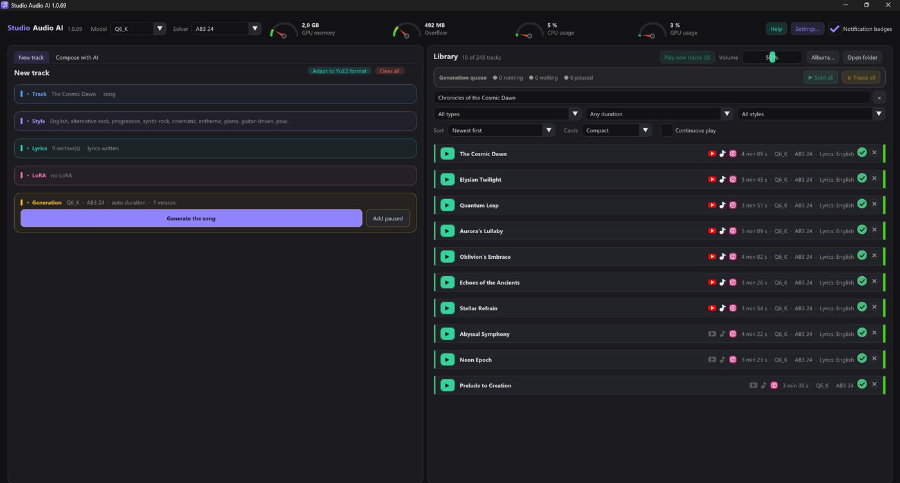
Requirements
- Windows 10 or 11 (64-bit). Interface in 10 languages (see Application language).
- A Vulkan-compatible graphics card (AMD, Nvidia or Intel) with plenty of video memory. Tested on an AMD RX 6700 XT (12 GB); the main model weighs 2.6 to 3.8 GB depending on the quantization and a generation uses 7 to 10 GB of video memory. Nvidia cards are supported (settings adapted automatically, optional CUDA engine) but could not be tested.
- 16 GB of RAM recommended (the application alone uses about 50 MB when idle).
- 5 to 6 GB of disk space for the models; each LoRA adds 13 to 280 MB; each track of about 3 minutes takes 50 to 70 MB (WAV + FLAC + MP3).
2. First launch
At first start, the application looks for the synthesis engine (yue-synth.exe) and then for the models: YuE2-3B-*.gguf and YuE2-Vae-F32.gguf, always in the application's modeles subfolder (1.0.32: each copy of the Studio only uses its own modeles, donnees and Audios folders, so you always know where your models, LoRAs and styles are). If they are missing, a window offers to download them into this folder, or to open it so you can copy your files there (models in modeles\musique, LoRAs in modeles\lora). The Settings show the path of these folders; every deletion asks for confirmation showing the full path, and a file outside the program folder is never deleted.
If the model is missing, a window offers:
- Yes — download the models from Hugging Face (about 4.6 GB: YuE2-3B in Q6_K, the audio decoder, the transcription models and the instrumental LoRA) into
modeles. A progress window appears; if the connection drops, restart the application: the download resumes where it stopped. - No — point to a folder that already contains a
YuE2-3B-*.ggufmodel andYuE2-Vae-F32.gguf(directly or in aggufsubfolder). The choice is remembered. - Cancel — quit.
modeles\musique\ (models) and modeles\lora\ (LoRA) before starting the application. The file modeles\LISEZMOI.txt lists the expected files.Model files
| File | Role | Size |
|---|---|---|
YuE2-3B-Q6_K.gguf | Main model (default) | 2.94 GB |
YuE2-3B-Q8_0.gguf | Main model, maximum quality | 3.81 GB |
YuE2-3B-Q5_K_M.gguf | Main model, the lightest | 2.62 GB |
YuE2-Vae-F32.gguf | Audio decoder (required) | 0.53 GB |
SheetSage2-Q8_0.gguf + MERT-v2-FullSong-Q8_0.gguf | Melody transcription (covers) | 0.1 + 0.9 GB |
adapters\ar_lora_inst_v3abc.bf16.safetensors | Instrumental mode LoRA | 0.14 GB |
3. The main window
The top bar
- Model — quick drop-down: model used for the next tracks (Q8_0, Q6_K, Q5_K_M…). The default model at startup is set in Settings.
- Solver — method and number of steps of the audio phase: AB3 16, AB3 20, AB3 24, Euler 32, AB2 32, AB3 32 or MP 32, ranked from fastest to slowest. See Performance.
- Help — opens this page (shortcut F1).
- Settings… — opens the settings window. The button turns orange if the graphics driver has changed since the last health test.
- Notification badges — turns on the notification-area icon (see Notifications).
The four dials: video memory, overflow, CPU and GPU
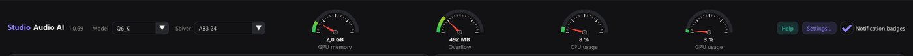
In the header, between the solver and the Help button, four needle dials, refreshed every 2 seconds. Settings › System offers two styles: Sport (large dials) or Compact (more room for the library). Hovering shows the details. Next to the “Studio Audio AI” name, the header shows the version number and, when a newer version is published, an orange “Update x.y.z” chip that opens the download page (see Settings › System).
- GPU memory — dedicated memory occupied on the card, all programs combined (“9.7 GB”).
- Overflow — system memory the card uses when its own memory is full. The dial is full at 2 GB; a few tens of MB are normal, overflow shows from 200 MB.
- CPU usage — processor load, all programs combined (as in Task Manager).
- GPU usage — graphics card load: busiest engine (3D, compute, video…), all programs combined. During a generation it should stay close to the maximum; a low value with a large overflow means the card is saturated by other programs.
- The dials, like every progress bar in the application, follow a green to bright red gradient (yellow then orange in between). On the GPU dial, an orange mark shows the limit set in Settings › System; with a limit, the dial shows the average of the last 16 seconds.
Keyboard shortcut and context menu
- F1 opens the help.
- In every text field: Ctrl+C / X / V, and a right click opens a Cut / Copy / Paste / Select all menu.
- Form blocks collapse with a click on their title.
4. Creating a track
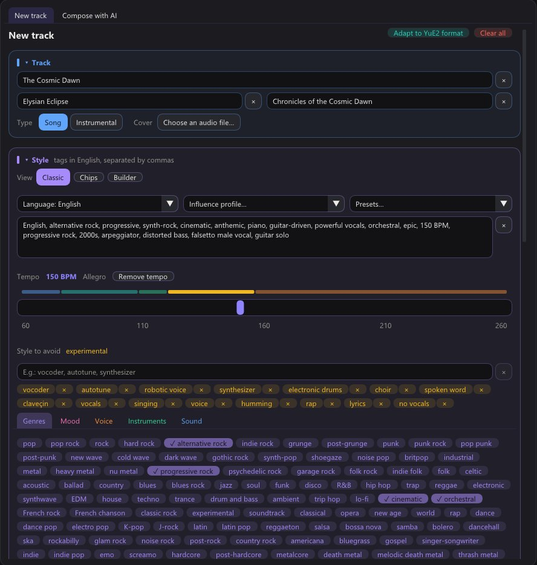
The “New track” form has five blocks: Track, Style, Lyrics (or Structure for instrumentals), LoRA and Generation. Each block collapses with a click on its title (▾ / ▸ arrow); collapsed, it shows a summary of its content, and the state is remembered.
4.1 The Track block
- Track name — required. A leading number (“01. City Lights”) is recognized as the track number; it is used by exports and by the “Track no.” sort. The “(re-render)” and “(recomposed)” suffixes added automatically never stack.
- Band or singer and Album — optional but useful: tracks with the same band and the same album form an album in the “Albums” window (covers, export, videos). Each field has a ✕ button to clear it.
- Type — Song (sung lyrics) or Instrumental (see Instrumentals). Each mode keeps its own structure text.
- Cover — “Choose an audio file…”: the chosen track is transcribed (melody) and then sung again in your style. See Covers. The text “transcription models missing” means SheetSage2 and MERT are not installed.
4.2 The Style block
The style is a list of English tags separated by commas (“alternative rock, 2000s, melancholic, 96 BPM, distorted guitar”). This text steers the genre, the mood, the voice and the instruments.
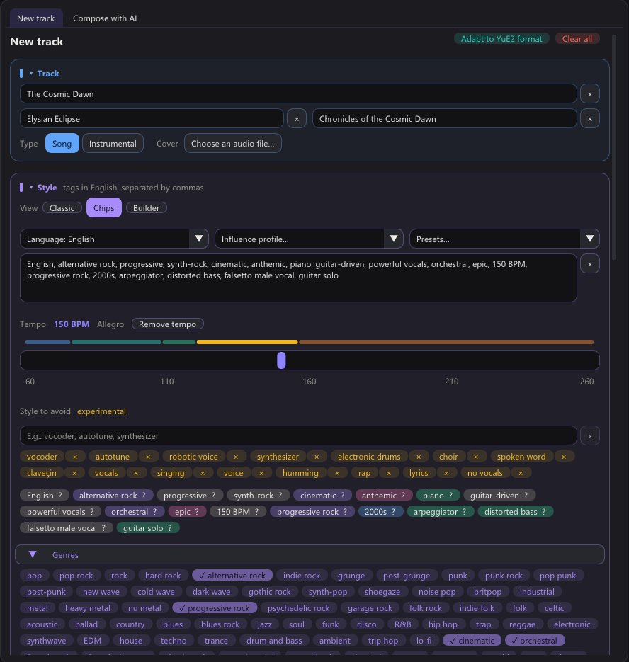
- Language — not specified, English, French, Spanish, Italian, German, Portuguese, Japanese, Korean, Mandarin or Cantonese. The chosen language is placed as the first tag of the style (“French, …”). YuE2 mostly sings in English; other languages are possible but less natural. The choice is remembered.
- Influence profile… — 42 profiles that fill the style with the sound of a band or genre: genres, era, instruments, voice type (no musician names). Profiles do not set a tempo (BPM).
- Presets… — remember a style. When saving (“Save the current style…”) you can include the ticked LoRA with their strength and the lyrics structure (list of sections). Choosing a preset applies everything; structures replace already written lyrics only after confirmation. A preset LoRA that is not installed is flagged. “Delete” removes the current preset. Since version 1.0.10, a preset can also store the style to avoid and its strength (“Include the style to avoid” box when saving); older presets leave that field untouched.
- Style field — multi-line area with a scrollbar; line wrapping is “soft” (it does not change the text). ✕ button to clear.
- Tempo — under the field, a slider from 60 to 260 BPM, in steps of 1, over a bar colored by movement (Largo, Andante, Moderato, Allegro, Presto); the value and the movement's name are shown above. The slider reads and writes the style's “120 BPM” tag (only one at a time, like the tempo tags of the categories); with no tag, the tempo is “not set” and the slider is grayed. “Remove tempo” deletes the tag; Ctrl+click on the slider lets you type a number.
- Style to avoid experimental — under the tempo, tags the song should avoid (“vocoder, autotune”), with clickable suggestions and a Strength slider (1.5 recommended, 1.2 to 3). The engine composes, in parallel, a version guided by these tags and moves away from it (“CFG” guidance). YuE2 was not trained for this: judge the effect by ear, comparing with the same seed without the field. Field filled: composition about 1.3 times slower and about 2.7 GB more video memory; empty, nothing changes. An extension keeps the song's style to avoid; the song's tooltip in the library shows it. Quick tags: each term typed in the field becomes a quick tag (saved when you leave the field or submit); a tag's “×” deletes it after confirmation. The list can also be managed in Settings › Generation.
- Tag categories — Genres, Mood, Voice, Instruments, Sound, each with its own color, about 335 tags in all (110 genres, 68 moods, 50 voices and timbres, 86 instruments, 20 tags for general pace, era and sound; the precise tempo is set with the slider). A click adds or removes the tag (✓ = active). YuE2 understands free text: you can type any tag in the style field; the lists contain the most frequent tags of the training vocabulary published for the YuE family (genres, instruments, moods, vocal timbres). A tempo tag such as “120 BPM” replaces any other BPM tag.
The three views of the block
The “View” switch at the top of the block changes the display without touching the content:
| View | Principle |
|---|---|
| Classic | Tabs by category, tags as clickable chips. |
| Chips | The style's tags as colored removable chips (✕), then collapsible category sections. |
| Builder | One selector per category (“Genres: rock, post-punk ▾”) that opens a list of tags to tick. |
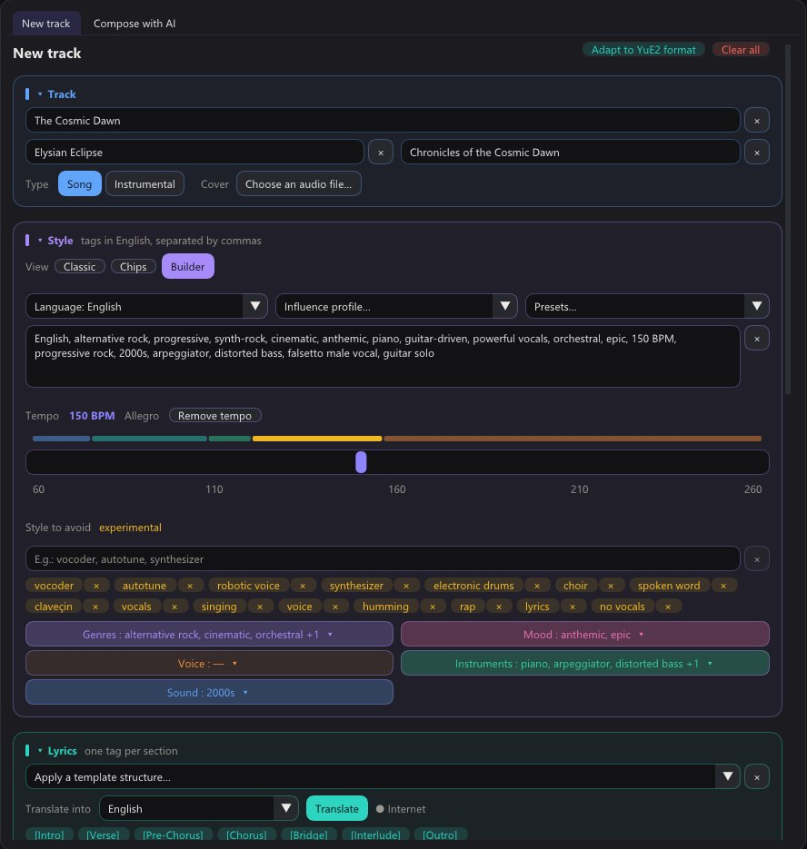
4.3 Adapt to YuE2 format
Many writing assistants produce “Suno” prompts (title, style in prose, detailed sections). YuE2 expects short English tags and simple sections. Paste the title, style and lyrics into the form, then click Adapt to YuE2 format (form toolbar):
- Title block — extracts the title, track number, album and band, which fill the fields and are written into the files' tags.
- Style block — the style written in prose is translated into English tags; explicit tags come before influence profiles; the style is capped at about twenty tags to stay consistent.
- Structure block — sections are mapped to YuE2 tags ([Intro], [Verse], [Pre-Chorus], [Chorus], [Bridge], [Outro]); per-section descriptors are ignored (they made the sound confused); an empty repeated chorus is copied; parentheses are removed. The BPM written in the lyrics takes precedence over the style's.
- In instrumental mode, the conversion produces a structure without text.
(The “Import from AI…” window was removed in version 1.0.1: paste directly into the form.) The instruction script for your AI is provided in the file prompt_YuE2.md.
4.4 The Lyrics / Structure block
The text is split into sections by tags in square brackets: [Intro] [Verse] [Pre-Chorus] [Chorus] [Bridge] [Interlude] [Outro]. The tag buttons insert the section at the cursor position, with the right line breaks.
- Apply a template structure… — 11 ready structures: Verse / chorus (ABAB), Pop with bridge (ABABCB), Pop with pre-chorus, Opening chorus, Double final chorus, Ballad, Classic AABA (32 bars), Strophic (AAA), Rock with solo, Electro build-up / drop, Short (≈ 1 min). If lyrics are already written, a confirmation precedes their replacement.
- My structures — “Save the current structure…”, at the bottom of the same list, stores the sections of the field under a name of your choice. It then appears under “My structures”, for songs and instrumentals alike; the cross on the right deletes it (after confirmation). Structures from imported packs are listed under the pack name.
- A song needs text under each sung section; Intro, Outro and Interlude stay without text.
- No lyrics in the structure: when the generation starts, the application removes all voice tags from the style (voice type and timbre, choir, sung language), because otherwise the model invents lyrics to fill the empty sections; a notification gives the number of tags removed. The form is not modified; only the generated track receives the cleaned style.
- Instrumental: same style cleaning (voice, choir, language) at each generation. With the instrumental LoRA, sections keep their tags ([verse], [chorus]…), which this LoRA knows and which receive no text; with the “Base model”, verses, choruses and bridges are sent as
[interlude]so that no section can receive text. - In instrumental mode, the block is called “Structure”: one tag per line, in lowercase, without text (
[intro],[verse]…);[interlude]does not exist (the instrumental LoRA does not know it) and becomes[bridge].
Translating the lyrics
Under the structure buttons, the Translate into [language] [Translate] row translates the sung lines into another language without touching the structure: section tags and empty lines stay in place, one translated line per original line. The list starts with the 10 languages YuE2 sings, then the others (the sung result is uncertain there). With the Internet, Google Translate is used (free, over 100 languages); offline, the local model takes over (about twenty languages, run on the processor, 20 s to 1 min) and the list keeps only its languages. After translating into a YuE2 language, the style's language tag is updated. Undo translation restores the original text as long as you have not edited the result. Settings: Lyrics translation.
4.5 The LoRA block
See the dedicated section: LoRA. In short: cards to tick, one strength per LoRA, the trigger word added automatically to the style, stacking possible.
4.6 The Generation block
At the top of the block, always visible (even when collapsed): the Generate the song / the instrumental / the cover button and the Add paused button. They stay grayed out while the name, the style or (for a song) the lyrics are missing, with the corresponding message.
| Option | Effect |
|---|---|
| Composition mode | No score (faster) — default; Melody only and Full (melody + chords) first make the model write a score, which adds 15 to 25 s but can structure some tracks better (the “raspy rock” LoRA recommends the full mode). |
| Seed | -1 = random. A fixed seed gives the same composition (with the same model, style and lyrics). A finished track's seed is shown on its card (“Seed”): a click selects it, Ctrl+C or a right click copies it; then paste it into this field (Ctrl+V or right click › Paste). A right click on the field also offers “Random (-1)”. |
| Automatic duration | Ticked: the ceiling is computed (song: 6 minutes maximum, the model ends at the end of the lyrics; instrumental: the estimated duration of the structure). Unticked: you set the ceiling (10 to 360 s); the estimate “≈ 3 min 30” is shown. |
| Fade out on the structure | See The end of tracks. |
| Versions | 1 to 3: generates several variants with different seeds, one after the other. |
| Instrumental engine | (Instrumental only) “Instrumental LoRA” (default) or “Base model”. |
4.7 Compose with AI
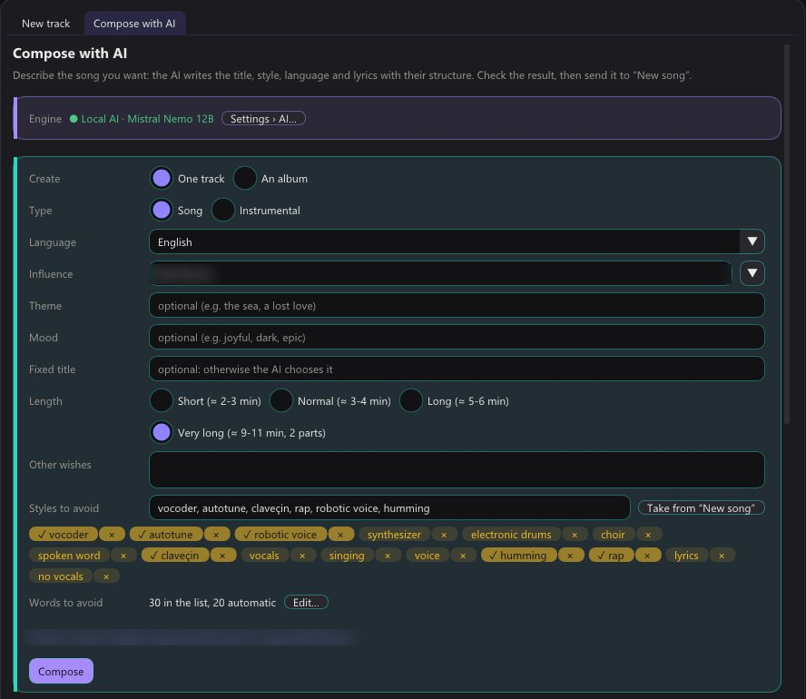
The Compose with AI tab, next to “New song”, has a language AI write a complete song. Fill in the sentence “Create a song in language inspired by band or singer on the theme theme” (mood, fixed title, length and other wishes are optional; tick Instrumental for a structure without lyrics), then click Compose.
- A whole album at once (1.0.33): choose An album at the top of the tab, the number of tracks (1 to 50), and if you like the album title and the band name (empty: the AI chooses them). The type can be Song, Instrumental or Mixed (with “Of which instrumentals”: 0 = no instrumental; never more than the Max instrumentals per album setting of Settings › AI, 2 by default). The AI first plans the album (band, title, a different title and subject for each track, with a shared sound but varying tempo and mood), then writes the tracks one by one; the local AI loads its model only once. Each track is added to the queue paused with the band, the album and its track number, the ticked LoRAs of “New song” (strength and trigger word) and its settings (duration, versions, model, solver); “New song” itself is not changed. “Stop” keeps the tracks already written.
- Words to avoid (1.0.33, Settings › AI): a list of words the AI must use neither in titles nor in lyrics (initially: night, heart, soul, dream, light, fire, star, shadow… and their French equivalents), editable, with “Restore the default list”. Words that come back in at least 3 of the last 15 tracks written by the AI are also avoided automatically (box to untick, “Forget the latest tracks” button). Covers card (1.0.36): image service (local: Z-Image Turbo on the graphics card, about 40 s per 768 × 768 image and 7 GB of video memory on an RX 6700 XT, 6.7 GB model downloaded on request into
modeles\images; online: OpenAI gpt-image-1, xAI, Together FLUX.1 schnell or an OpenAI-compatible service, with the same service's API key). The field wraps lines on its own according to its width, and the “Remove duplicates” button removes repeated words (accents, capitals and plurals ignored: “Dream” and “dreams” count as one). If a track still contains a forbidden word, the Studio asks once more. Titles already written in an album are passed on so they are not repeated. - Album tracks (1.0.36): in the album card, clicking a track shows its title, style, language, structure and lyrics in “Result” (with “Save as a personal style…”). The last album written is kept (
config\dernier_album.jsonfile) and found again at the next launch. - Covers (1.0.36): Create the covers box (and, optionally, the YouTube 16:9 and TikTok 9:16 images). The AI describes the cover in the album plan; the images are created after all tracks are written and queued, paused, then stored as the album's covers (embedded in exported files). An existing image is never replaced without confirmation. The service is chosen in Settings › AI › Covers. During creation, a window in the middle of the application shows the current image and the elapsed time (Cancel button); it closes on its own at the end (1.0.37).
- Instrumentals without vocals (1.0.37): for each instrumental track, the AI is told to write a style without vocals, and the Studio makes sure of it itself: vocal tags removed from the style, “instrumental, no vocals” added, and voices (vocals, singing, voice, choir, humming, spoken word, rap, lyrics) added to the track's “Style to avoid”.
- LoRA (1.0.35): the LoRA block of “New song” is also shown in the tab. They are the same boxes and strengths: ticking, unticking or adjusting a LoRA in one tab shows up right away in the other.
- Styles to avoid (1.0.34): the same field as in “New song”, with its quick tags, taken from “New song” at first display (“Take from “New song”” button). The AI is told not to suggest these styles, they are removed from the written style, and they become the “Style to avoid” of each track sent (single or from an album).
- Save as a personal style (1.0.34): the style written by the AI (single track, shared album sound or the style of each album track) is added to your styles (“Presets…” list of the Style block), optionally with the ticked LoRAs of “New song” and the styles to avoid. The suggested name is the band name or the title; if one of your styles already has this name, the Studio asks: Replace or Keep both.
- The band name and album title chosen by the AI are also checked against the words to avoid (1.0.34): if one contains a forbidden word, the album plan is asked for once more. Names you type yourself are never changed.
- The instruction sent to the AI requires a structured answer: title, language, style (short English tags) and lyrics with their sections.
- The answer is then cleaned: sections brought back to YuE2 tags ([Intro], [Verse], [Pre-Chorus], [Chorus], [Bridge], [Interlude], [Outro]) without descriptions or numbers, nothing under instrumental tags (no solo descriptions), stage directions and “(x2)” removed. The number of removed items is shown.
- The result (title, style, language, structure) is shown and placed right away in New song (song or instrumental). If the form already holds written lyrics, you are asked to confirm before they are replaced. The Studio’s influence profile completes the style if the box is ticked, and the trigger words of ticked LoRAs are kept.
- The AI answer is shown as readable text (title, style, language and lyrics separated by a blank line) in an editable field: Copy button; after a manual correction, or after pasting another tool’s answer there, click Read the answer again.
- With the built-in local AI, a request is only possible when idle (no song being generated): the model loads, writes the song, then frees the graphics card. Meanwhile no generation can start.
The engine is chosen in Settings › AI (lyrics).
5. Instrumentals
Instrumental mode generates music without vocals. By default it uses the ar_lora_inst_v3abc LoRA (applied automatically) and a structure of lowercase tags without text.
- Choose sections consistent with the desired duration: the estimate counts about 15 s for an intro, 30 s for a verse or chorus, 25 s for a bridge, 20 s for an outro.
- In instrumental mode the model never emits an “end”: the track is therefore always stopped at the duration ceiling, with a fade-out. See The end of tracks to adjust it.
- Specify instruments in the style and avoid voice tags.
6. Covers
A cover replays the melody of an existing recording in another style: “Cover” → “Choose an audio file…” (MP3 or WAV). The application transcribes the melody (SheetSage2 + MERT), then YuE2 sings it with your style and lyrics.
- The lyrics must fit the melody: ideally the original lyrics, or new lyrics with the same number of syllables line by line, otherwise the voice drifts.
- For a song, the melody alone guides the voice; for an instrumental, the full score (chords) is used. Transcription errors carry over into the cover.
- The duration is that of the file + 15 s (6 minutes maximum). The generate button becomes “Generate the cover”.
- The option is grayed out if the transcription models are missing.
Analyzing the file's style
If the audio analysis model is installed (Settings › Audio analysis), the chosen file is analyzed in the background (progress bar, “Cancel” button; about 1 minute for a 5-minute track). The “File analysis” block then offers style tags as checkable chips (hover = origin and confidence percentage):
- Genres — the most likely styles among 400 Discogs genres, translated into YuE2 tags (“synth-pop”, “gothic rock”…); the first three are checked.
- Mood and Instruments — dominant mood (melodic, energetic, dark…) and recognized instruments (electric guitar, synthesizer, drums…).
- Voice — male or female voice (tagging model), then register inferred from the sung melody: deep voice, baritone, tenor, alto, mezzo-soprano, soprano.
- Tempo and key — “130 BPM” (which also sets the tempo slider) and “A minor key”, read from the transcribed score.
Two buttons: Apply to style and lyrics adds the checked tags to the style (no duplicates, a single tempo) and, if “Use the detected structure in the lyrics” is checked, replaces the lyrics with a skeleton of the detected sections ([Intro], [Verse], [Chorus], [Interlude]…); if the field already holds lyrics, a confirmation is asked. Apply and generate is the automatic mode: same settings, then generation starts at once (the title is taken from the file name if empty); with no lyrics to sing, or if the file is instrumental, the cover is generated as an instrumental.
Lyrics. If the transcription model is installed (Settings › Lyrics transcription) and the file contains a voice, Whisper also writes out the lyrics (about 35 s more for 5 minutes) and detects their language. The “Use the detected lyrics” box (checked by default) shows a preview: the lines are sorted into the detected sections ([Verse], [Chorus]…); “Apply” puts them in the Lyrics block (confirmation if the block already holds text), sets the style language, and “Apply and generate” starts the cover with these lyrics. Automatic transcription is not perfect on music: proofread and correct the lyrics before generating. Phrases that Whisper sometimes invents on music (“Thank you for watching…”, subtitle credits, “Subscribe”) are discarded.
Lyrics found online. If the option is on (Settings › Analysis and lyrics, checked by default), the application guesses the track's artist and title (file tags, otherwise its name and folders, for example The Sisters of Mercy\1990.Vision Thing\08 I Was Wrong.mp3) and looks up its lyrics on lrclib.net, a free and open lyrics database. If the words heard by Whisper are found there, these lyrics replace the transcription; the structure is rebuilt from the stanzas (repeated stanza = [Chorus], other = [Verse], single stanza after the second chorus = [Bridge], [Intro] and [Outro] taken from the analysis). A line under the tags shows the result: lyrics found (with the source), track not found, lyrics too different from what Whisper heard, or no connection. In all these cases the Whisper transcription is kept and nothing blocks: without Internet, the search gives up within a few seconds.
During a generation the analysis runs without the score (no tempo, key or structure) so it does not compete for the graphics card. The result is an input aid: check the tags before generating. The automatic analysis on selection can be turned off in Settings.
7. LoRA
A LoRA is a small file that specializes the model in a style, a voice or an instrument. It acts on the composition (“AR” half), on the sound (“NAR” half) or on both. It does not generally “improve”: it steers.
Choosing a track's LoRA
- The form's LoRA block shows one card per installed LoRA: checkbox, name, type (Style, Artist, Instrument, Slider, Compos., Custom), a two-line description and, once ticked, a strength slider (1.0 = generally recommended setting).
- They are stackable: tick as many as you like, each with its own strength.
- A LoRA that has a trigger word (e.g.
chnsn,grvl,jpstyle26) adds it automatically at the start of the style when you tick it, and removes it when you untick it. - The choice is remembered with each track (visible on its card), and reused by recomposition, re-render and “Reuse”.
- The instrumental LoRA does not appear here: it is tied to Instrumental mode.
Downloading LoRA
In Settings › LoRA, a table lists a catalog of 40 LoRA (name, type, size, trigger word). The Download ↓ button puts the file straight into modeles\lora\; a progress bar and a ✕ button let you follow or cancel. The ↗ button opens the author's page (license, examples). A LoRA dropped by hand into the folder is recognized automatically. Your personal LoRAs (created with the Forge or dropped by hand) have their own My LoRAs table below the catalog: name, type, size, trigger word, details (rank, number of steps…) and a Delete button; their description shows on hover. This information comes from a .json file with the same name next to it (the Forge writes it), otherwise from the LoRA file header. The trigger word is added to the style when the LoRA is ticked, as for catalog LoRAs.
| Family | Examples |
|---|---|
| Styles | French chanson (Montmartre, Cabaret, Grand Boulevard, Rive Gauche), raspy rock and soul, industrial rock, epic trailer, dream pop, old school hip-hop, militant reggae, qawwali, Bulgarian voices, folk troubadour, canzone italiana, quiet storm, dark sufi, melodic death metal, J-pop, Arab maqam rock, phonk |
| Artist | SV Billie |
| Instruments | Shofar, duduk |
| Sliders (13 MB) | Female / male voice, pop, hip-hop, R&B, indie rock, pop punk, metal, country, acoustic folk, house, disco funk, K-pop, reggaeton, afrobeats, lo-fi (strength from 0 to 1) |
What a LoRA costs
- Each LoRA is merged into the model on loading: about 14 s per affected half with Q6_K (a LoRA acting on both halves adds ≈ 26 s in total; the instrumental LoRA alone ≈ 6 s with Q8_0).
- No slowdown afterwards, and very little extra memory.
- The merge happens in a quantized model: with Q6_K or Q5_K_M this adds a little rounding; Q8_0 is the most faithful for tracks with LoRA.
Notes on some LoRA
- Raspy rock (grvl) — raspy, powerful female voice, English lyrics, full composition mode recommended. The author offers six variants (Ember the lightest, Tempest the most pronounced); only Thunder is in the catalog, the others work if you drop them in.
- Dream pop, old school hip-hop, dark sufi — work better with the score disabled (“No score”).
- Shofar, duduk — start the style with the instrument's name; with a score, keep the strength at 0.5 or below.
- Sliders — very light: use them to nuance (female or male voice, a hint of metal…).
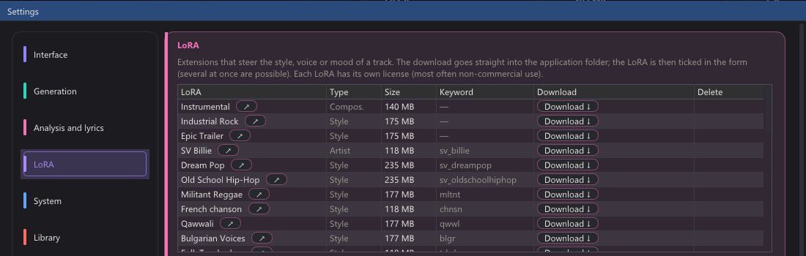
8. The end of tracks (duration and fade-out)
A track ends in one of two ways:
- Natural end — the model concludes by itself at the end of the lyrics (songs with automatic duration). The end is the composition's; nothing is added.
- Duration ceiling reached — the track did not conclude before the maximum duration (the case of all instrumentals, and of any fixed-duration track). The application then applies a fade-out (orange “Fade-out” label on the card) instead of a hard cut.
Adjusting the fade
- Settings › End of tracks — length of the general fade, from 1 to 30 s (5 s by default, linear curve).
- “Fade out on the structure” checkbox (Generation block) — for this track, the fade lasts as long as the last section of the structure (outro: 20 s in instrumental, 15 s in a song; 12 s if the last section is a verse or a chorus; between 5 and 30 s) and follows a half-sine curve, soft at the start and at the end. The value is remembered with the track and reused by re-render and recomposition.
9. The generation queue
Tracks are generated one at a time (the graphics card only processes one), in the order they were added. The “Generation queue” bar summarizes: running, waiting, paused, plus the Start all buttons (puts all paused tracks back in the queue) and Pause all (pauses the whole queue and frees the card; the running generation restarts from the beginning).
| State | Meaning and actions |
|---|---|
| Waiting | In the queue, will start in its turn. “Position n in the queue”. Actions: Pause, Cancel. |
| Paused | Will not start until you start it. Actions: ▶ Start, Cancel. |
| Running | Progress bar with the stage (“Audio synthesis 12/32”), the elapsed time and the estimated time left. Actions: ⏸ Pause, Cancel. |
| Done | The track is in the library (see below). |
| Interrupted / Cancelled / Error | Actions: ↻ Retry (same settings), Reuse, Delete. |
Video memory check
Before adding a song to the queue, the app estimates the video memory needed (model size + about 4 GB of working memory + a little more for long songs) and compares it with the card's free memory. If it is not enough, the “Not enough video memory” window shows the programs using the card (browsers, games, video editors…), from the most to the least demanding. Close them, then choose Generate anyway, or Add paused to start later; Task Manager opens it directly. Windows cannot force other programs to release their memory: they must be closed. The check is skipped when a generation is already running.
Time left
The estimate is learned from your history (card speed, track lengths, solver and model used) and refines itself with each generation. During the audio phase it follows the real pace of the steps.
Automatic pause while gaming
Settings › Games: when a full-screen application (or a program from your list) starts, the queue is suspended (“game running: queue suspended”), the running generation is stopped (it will restart from the beginning) and the queue resumes 10 seconds after the game is closed. The program list is entered as file names separated by commas (“cs2.exe, VRising.exe”).
Closing the application during a generation
A “Quit?” confirmation appears: the running generation is interrupted (“Interrupted” state, can be restarted) and queued tracks come back paused at the next start.
Notifications
With “Notification badges”, an icon in the taskbar notification area (near the clock) shows:
- a red badge with the number of finished tracks to discover;
- a purple badge with the number of generations running or waiting.
Minimized app (“Minimized app: gauges and counters next to the clock” in Settings › Interface › Notifications, on by default): two more icons appear near the clock while the window is minimized. The first shows three bars: CPU, GPU and GPU memory (left to right, with a gradient from green at the bottom to bright red at the top). The second shows two numbers: at the top (purple) songs waiting or running, at the bottom (green) songs finished since minimizing. Hover for exact values. On Windows 11, if they stay hidden behind the ^ arrow, pin them: Settings › Personalization › Taskbar › Other system tray icons.
A click opens the window; the icon's menu offers Open Studio Audio AI, Start all, Pause all and Quit.
10. The library
The right side of the window lists your tracks. At the top: the counter, the player's Volume, Albums… and Open folder (the Audios folder).
Search, filters and sorting
- Search — in the title, band, album, style and original track.
- Type — All, Songs, Instrumentals, Covers, Re-renders and sequels, Not finished, Approved, Not approved, With a problem, New (to listen to).
- Duration — under 1 min, 1 to 2, 2 to 3, 3 to 4, 4 min and more.
- Style — list of all the tags of your tracks, with their count.
- Sort — Newest first, Oldest first, Title A→Z, Track no., Duration (longest first), Approved first.
- Continuous play — at the end of a track, plays the next one in the displayed list. With the “Track no.” sort and the “Approved” filter, you listen to an album in order.
The queue always stays visible, whatever the filters.
Card layouts
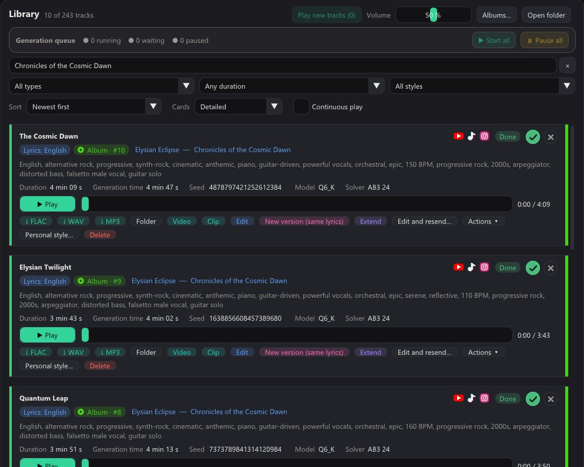
The “Cards” list chooses how finished tracks are presented (running or failed tracks always keep the detailed card). The choice is remembered.
| Layout | Description |
|---|---|
| Detailed | Title, chips, band and album, style, statistics, player and all action buttons. |
| Compact | One line per track (play, title, duration, model, solver, LoRA, marks). A click on the title expands the detailed card; another click on the title collapses it. |
| With cover | The cover on the left, the information, the player and an Actions ▾ menu grouping export, video, re-render, etc. |
| Compact with cover | One line per track with a small cover; a click on the title expands the card with cover, the full style and all statistics; a click on the title collapses it. |
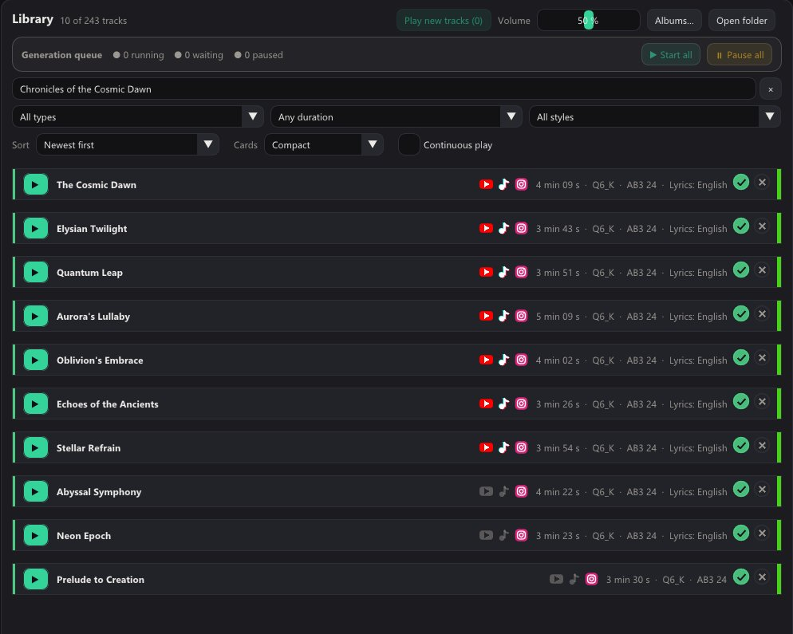
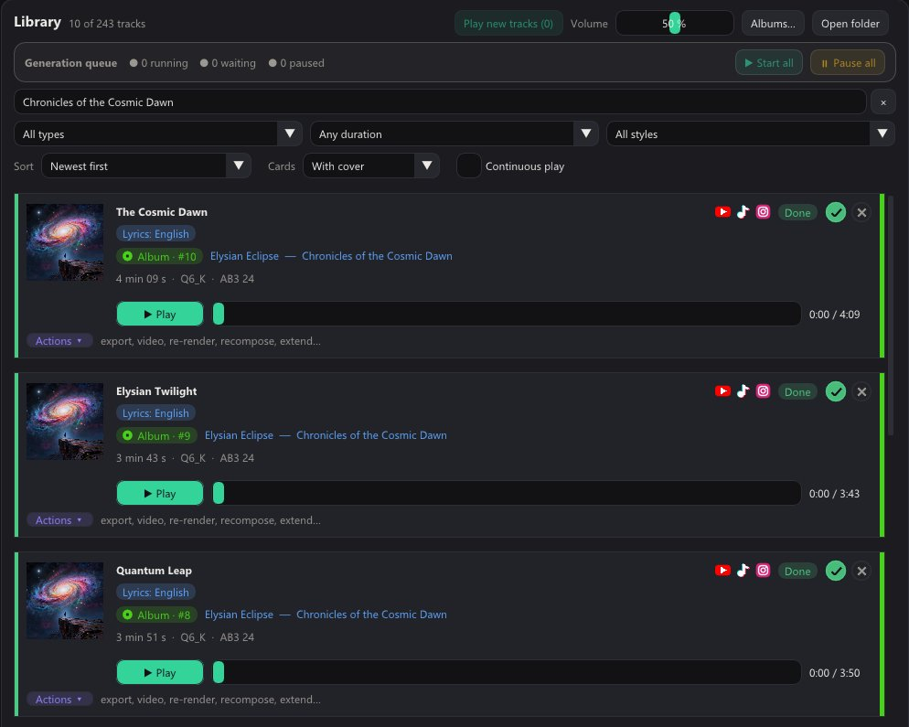
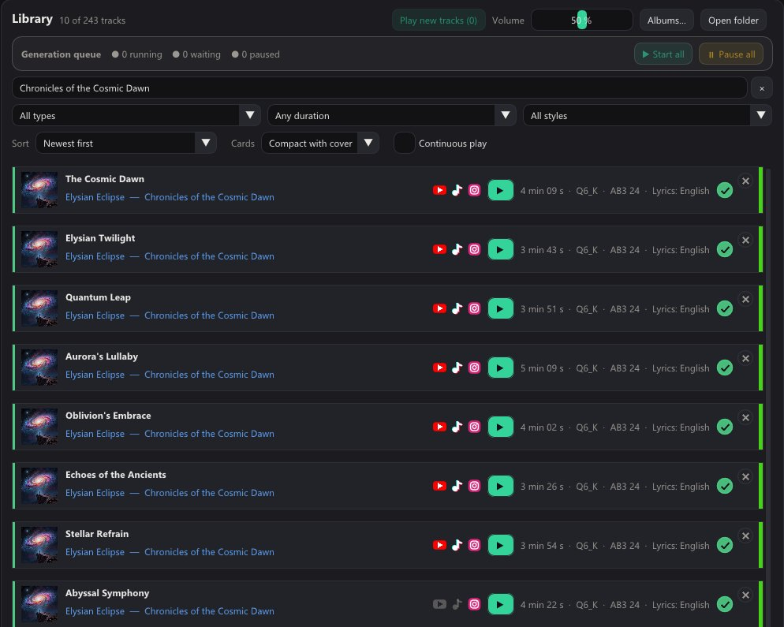
Album tracks (1.0.37): a track that belongs to an album has a coloured stripe on the right edge of its card (the same colour for the whole album; status colours stay on the left) and a label with a small disc “Album · #track”. Hovering the label shows the band and the album; a click shows only that album (search field, clear it to see everything again).
The lyrics language
A “Lyrics: English” chip (or French, Spanish, Italian, German, Portuguese, Japanese, Korean, Mandarin, Cantonese) appears on sung tracks. The language is declared when the style contains a language tag (hover: “declared by the style's language tag”), otherwise detected from the lyrics text (Japanese, Korean or Chinese script, or common words of Latin-script languages; a few lines are needed). No chip: instrumental, or language undetermined. It is saved in the track's file.
Approving or flagging a track
Each finished track carries a mark: approved (you are satisfied), with a problem (to analyze, e.g. a crackle) or none (“to listen”). The two marks are mutually exclusive. The marks' style is chosen in Settings › Track marks:
| Style | Principle |
|---|---|
| Thumbs (default) | Green thumb = approved, red thumb = with a problem; a second click removes the mark. |
| Check and cross | Two circles: solid green check for approved, solid red cross for with a problem; a second click removes the mark. |
| Switch | Three segments “To listen / Approved / Problem”; a click picks the displayed state, “To listen” removes the marks. |
The type filter offers Approved, Not approved and With a problem; album export can be limited to approved tracks.
“New” tracks to listen to
A freshly generated track that is not yet listened to and neither approved nor flagged is displayed in pink (tinted card, pink border, “New — to listen to and check” label or “To listen” chip) in every layout. It returns to normal as soon as you play it, or approve or flag it. The “New (to listen to)” filter lists them. Tracks that existed before this feature are considered listened to.
A track's actions
| Action | Effect |
|---|---|
| ▶ Play | Built-in player with position slider and volume. Playback uses the lossless WAV file. |
| ↓ FLAC / ↓ WAV / ↓ MP3 | Saves a copy of the file (“Save as” box). FLAC is 24-bit, MP3 is 320 kbit/s; both contain title, band, album, track and style as tags. |
| Folder | Opens the track's folder in Explorer. |
| Video | Creates the track's YouTube / TikTok videos (see Videos). |
| Edit | Title, band or singer, album, track number and cover. The FLAC and MP3 tags are updated without re-encoding. |
| Re-render | Keeps the composition (melody, lyrics, structure) and only redoes the audio synthesis. The choice: “Keep the same seed” (render almost identical to the original, without the clipping of old versions) or “Take a random seed” (new variation of timbre and mix). Requires the track's audio.json file. |
| Recompose | New composition with the same style and lyrics (new seed): the only way to fix a faulty composition, which a re-render merely resynthesizes. |
| Extend | Creates a new track that picks up this one and continues it: name, added duration (60 s by default) and structure of the continuation. The total duration remains limited to 6 minutes (button grayed out beyond 340 s). |
| Reuse | Reloads the track's style, lyrics, LoRA and settings into the form. |
| Delete | After confirmation, sends the track's folder to the Windows recycle bin: it can be restored from there (right click › Restore), unless you empty the bin. Not possible while the track is queued or running. |
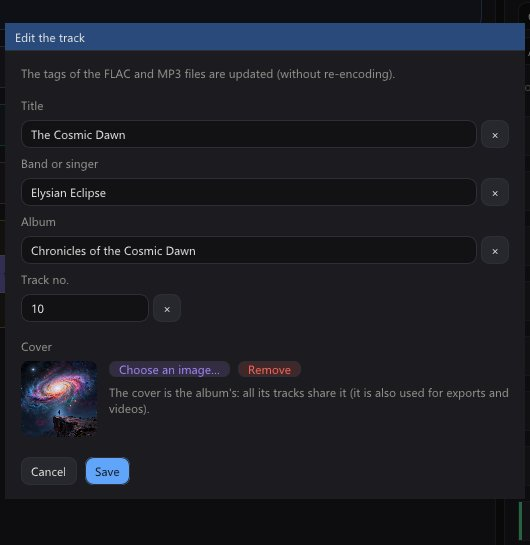
11. Albums, covers and exports
“Albums…” opens the list of albums: finished tracks with the same band and the same album title (filled in at import or in “Edit”). Each album fits on one line: thumbnail, number of tracks, green lights for the images and videos already created, Export, Videos…, Complete… buttons and a … menu. The arrow unfolds its sheet, with two tabs: Covers and Videos.
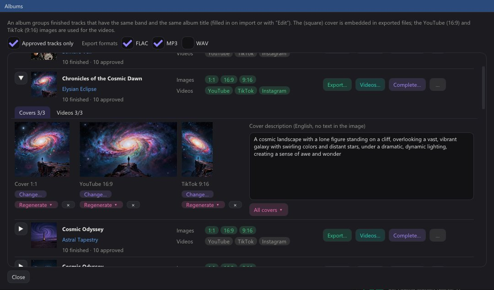
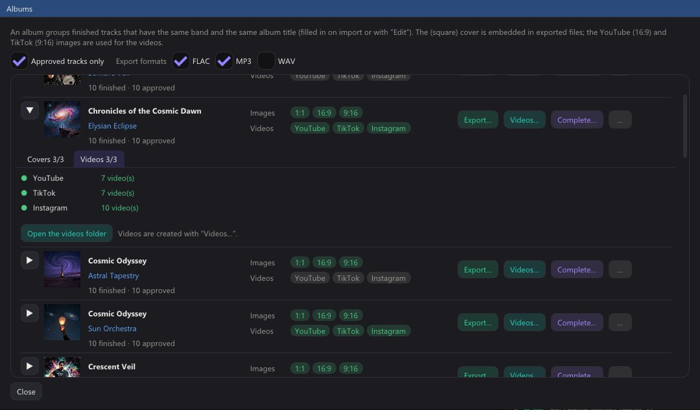
- Three images per album: Cover 1:1 (embedded in exported files and displayed in cards), YouTube 16:9 and TikTok 9:16 (used for videos). Clicking an image shows it full size.
- AI-made images: Generate or Regenerate ▾ buttons under each image and All covers ▾, from the editable description (in English, no text in the image). The menu offers the default setting or a specific local model: FLUX.2 klein, Z-Image Turbo, MOSS-Image or SDXL-Lightning, with the estimated time.
- Export formats: FLAC, MP3, WAV (checkboxes), and “Approved tracks only”.
- Export: files are written to the album's
Audiossubfolder asNN - Title.ext, with tags (title, artist, album, track n/total) and the cover embedded in FLAC and MP3, pluscover.jpg. - Complete…: opens “Compose with AI” to add tracks to this album, with the same band, the same sound and track numbers following on.
- … menu: Rename… (band or album title; tags, folders and images follow), Open the album folder, Write the descriptions (local AI) (a
description.txtfile for the band, the album and each track, in the interface language, never overwriting an existing file) and Delete the album… (sent to the Recycle Bin, with confirmation). - Videos…: creates a still video or a clip per title of the album (see below).
12. Videos and clips
The “Video” button of a track, or “Videos…” of an album, opens the “Create videos” window.
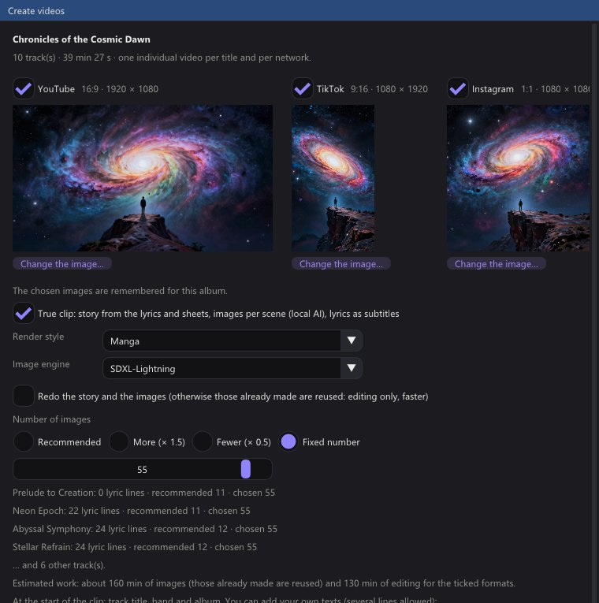
- Still video (“True clip” unticked): an image with the track's sound (AAC 320 kbit/s), created individually per title, one per ticked network.
- True clip: the local AI writes a story from the lyrics and the track's sheets, the local image model creates one image per scene, then the editing adds slow camera moves, fades and the lyrics synchronized as subtitles (choruses larger and orange). An instrumental has no subtitles. Files
<title>_<Network>_Clip.mp4in the same folders. - Render style (realistic, comic book, manga, anime, watercolor…) and image engine: FLUX.2 klein, Z-Image Turbo, MOSS-Image or SDXL-Lightning, installed from Settings › AI › Covers.
- Number of images: Recommended (from the lyrics and duration), More, Fewer or Fixed number (up to 60). The window shows the detail per track and a time estimate.
- Redo the story and the images: otherwise those already made are reused (the track's
clip_scenesfolder): only the editing is redone, which is much faster. Lyrics can be corrected in the track'sparoles.txtfile. - Start and end text: shown on the opening card and during the last 8 seconds. The end text goes in the centre or at the bottom (where the lyrics go, so it does not hide the character), with an optional dark background (semi-transparent black band, readable on a bright image).
- Same seed for all images of a video: each scene keeps its own description, but the image model's starting draw is shared: face, colours and framing look more alike from one image to the next. It helps, it does not guarantee. It only affects new images: also tick “Redo” for a video already made.
- Text sheets (
paroles.txt,fiche.txt,fiche_album.txt,fiche_groupe.txt): the video's story uses them. For older tracks, Actions ▾ › Write the text sheets (or an album's “…” menu) creates them at once; an existingparoles.txtis never replaced. - Run it when idle: the text and image AIs use the graphics card.
- YouTube: 16:9, 1920 × 1080, in
videos\YouTube:YouTube\<title>_YouTube.mp4. TikTok: 9:16, 1080 × 1920, invideos\TikTok:TikTok\<title>_TikTok.mp4. Instagram (1.0.41): 1:1, 1080 × 1080, inIG:IG\<title>_Instagram.mp4, with the album's square cover. An image of another format is centered on a black background. - Videos are stored in the album's
videosfolder. The chosen images are remembered for the album. - Titles are processed one after the other. Each video is written under a temporary name (
.part), checked (full playback, a real non-black image) and then renamed: a failed video is reported instead of staying on disk. - The task's “Cancel” button stops the creation.
13. Settings
The “Settings…” window gathers the application's options. It opens wide (1100 px, or the screen width minus a margin) and can be resized by dragging its bottom-right corner (640 px minimum). The settings are sorted into seven categories, each with its own color: Interface (language, theme, marks, notifications), Generation (model, track endings, solver), Analysis and lyrics (audio analysis, Whisper transcription), LoRA, System (games, graphics card) and Library. The category list is a column on the left; when the window is narrow it becomes a row of buttons at the top. Each block is a frame in its category's color, with a colored bar on the left like in the form; the content scrolls, “Close” stays at the bottom.
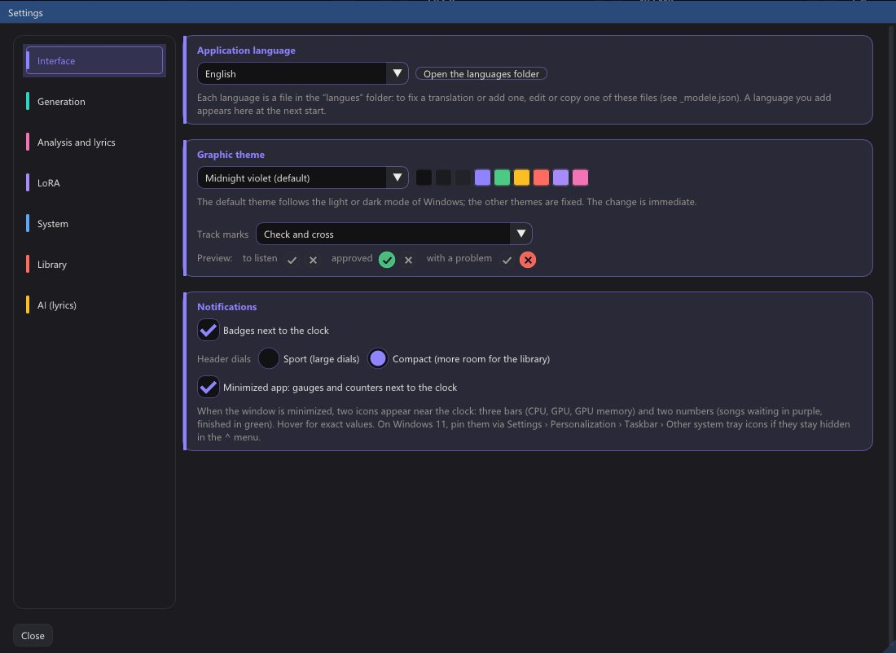
Application language
Studio Audio AI comes in ten languages: French, English, Spanish, Italian, German, Portuguese, Japanese, Korean, Chinese (Mandarin, simplified) and Cantonese (traditional). At first launch, the application uses Windows's language if available, otherwise English. The choice is made at the top of Settings and applies immediately (fonts are rebuilt: Segoe UI for the Latin script, Windows fonts for Japanese, Korean and Chinese). The texts you write (titles, styles, lyrics) and the style tags (in English) are not translated. This help page exists in French and English; the application opens the one matching its language (English for every language other than French).
Each language is a file in the langues\ folder (en.json, ja.json…): a translator can fix a text by editing its file, or add a language by copying _modele.json (an added language appears at the next start). Missing texts of a language are shown in English, then in French. The “Open the languages folder” button opens this folder; the file langues\LISEZMOI.md details the rules (keep the %d / %s markers, line breaks, etc.).
The window has a minimum width (1180 px) so that the longest texts (German, Portuguese…) do not overlap; when space runs out, buttons wrap to the next line.
Graphic theme
Four themes, with a palette preview; the change is immediate and remembered:
- Midnight violet (default) — dark violet; follows Windows's light or dark mode.
- Studio gray — dark, neutral, amber, denser (almost square corners).
- Paper and ink — warm light, ink blue, very rounded corners.
- Light mint — fresh light, turquoise.
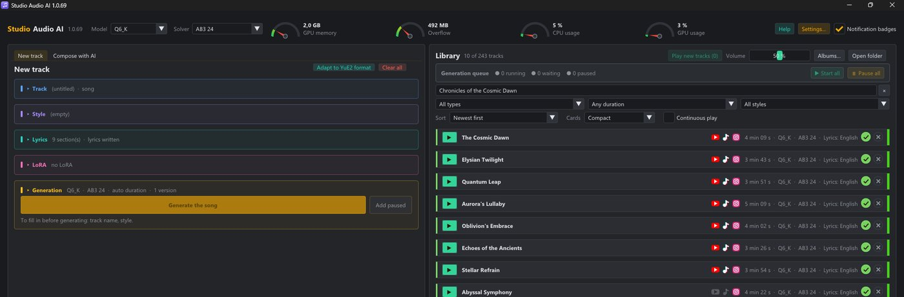
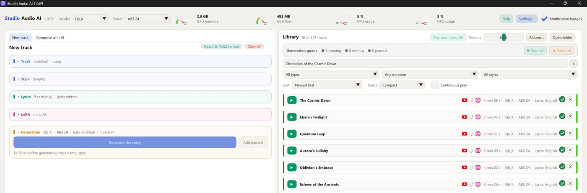
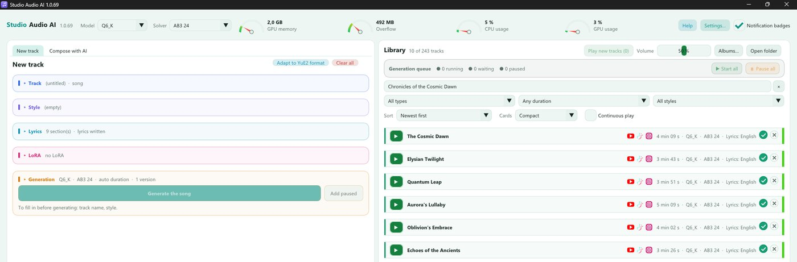
Track marks
Thumbs, Check and cross or Switch (preview of the three states just below). See Approving or flagging a track.
Notifications
“Badges next to the clock”: turns on the notification icon (the checkbox also exists in the top bar).
Games
“Suspend the generation queue when a game is launched”, and the list of programs to watch. The detection state is displayed (“No game detected — the queue can run” or “Game detected: …”). See Automatic pause.
Generation model
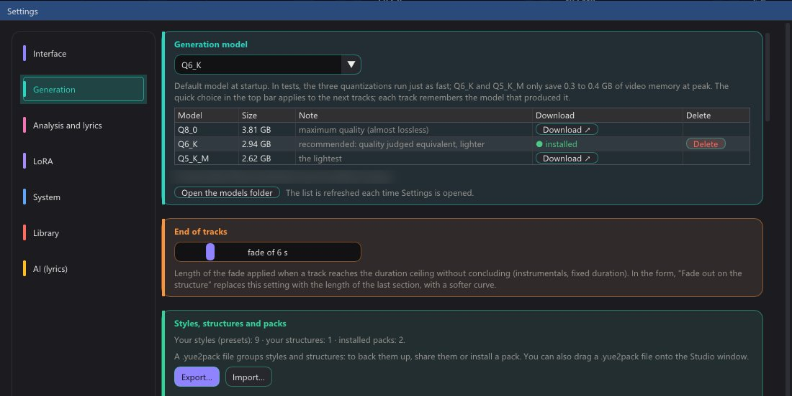
List of the startup default model, and a table of the three quantizations with a Download ↗ button (opens the download in the browser; then place the file in the folder given by the tooltip) or “● installed”. “Open the models folder”. The list refreshes each time Settings is opened.
End of tracks
Length of the fade for tracks cut at the ceiling (1 to 30 s). See The end of tracks.
Audio-phase solver (NAR)
Default solver at startup, with a table of the 7 solvers (network evaluations, relative speed, note). See Performance.
LoRA
Catalog of 40 downloadable LoRA, “Open the LoRA folder”. See LoRA.
Styles, structures and packs (.yue2pack)
In Settings › Generation. A .yue2pack file groups styles (presets) and structures: use it to back them up, share them or install a pack of influence styles.
- Export… — tick the styles and structures to put in the file (“Tick all” / “Untick all”). Give a pack name (with author, version and description) to make it a pack; leave the name empty for a simple backup.
- Import… — or drag a .yue2pack file onto the Studio window. A pack's items are listed under its name (“Rock 80s › Cold wave”); those of a simple backup join your own styles and structures. If an item with the same name already exists, the Studio asks: Replace, Keep both (the imported item becomes “Name (2)”) or Skip, with the box “Do the same for the next items”. If the pack itself is already installed, the question covers the whole pack: Replace the pack (the old one is removed) or Keep both (the new one becomes “Pack name (2)”, with its own row in the table, removable separately). A style that uses a LoRA you have not installed is imported anyway, and a message tells you.
- The installed packs table shows their author, version and contents; the description appears when hovering the name; Delete removes all the pack's styles and structures (it can be imported again from its file).
“Style to avoid” quick tags
List of tags offered under the form's “Style to avoid” field (initially: vocoder, autotune, robotic voice, synthesizer, electronic drums, distorted guitar, choir, spoken word). An Add field accepts one or more comma-separated terms; a tag's cross deletes it after confirmation; Restore default list brings back the initial list. Saved in studio_reglages.json (key negative_tags).
Model and LoRA updates
At launch, the application compares, in the background, the size of each installed main model (Q8_0, Q6_K, Q5_K_M) and each installed catalog LoRA with that of the latest version published on Hugging Face (the repository's main branch; catalog LoRA are pinned to a revision, the update takes the most recent version). A different size makes an orange “Update ↓” button appear next to “● installed” in the tables; a notification summarizes the number of updates. One click downloads the file (progress bar and ✕ to cancel, resumable after a connection drop) and then replaces the old file. The button is grayed out during a generation. Detection relies on file size (an update of exactly the same size is not seen); offline, nothing is shown.
Deleting models and LoRA
The model and LoRA tables have a Delete column: the button appears on every installed row (including models and LoRA dropped in by hand). After confirmation, the file is permanently deleted from disk (it does not go through the recycle bin, as these files weigh several GB); catalog models and LoRA can be downloaded again. Tracks already generated are not affected. The button is grayed out during a generation. If you delete the model in use, the application picks another (Q6_K preferably).
Audio analysis
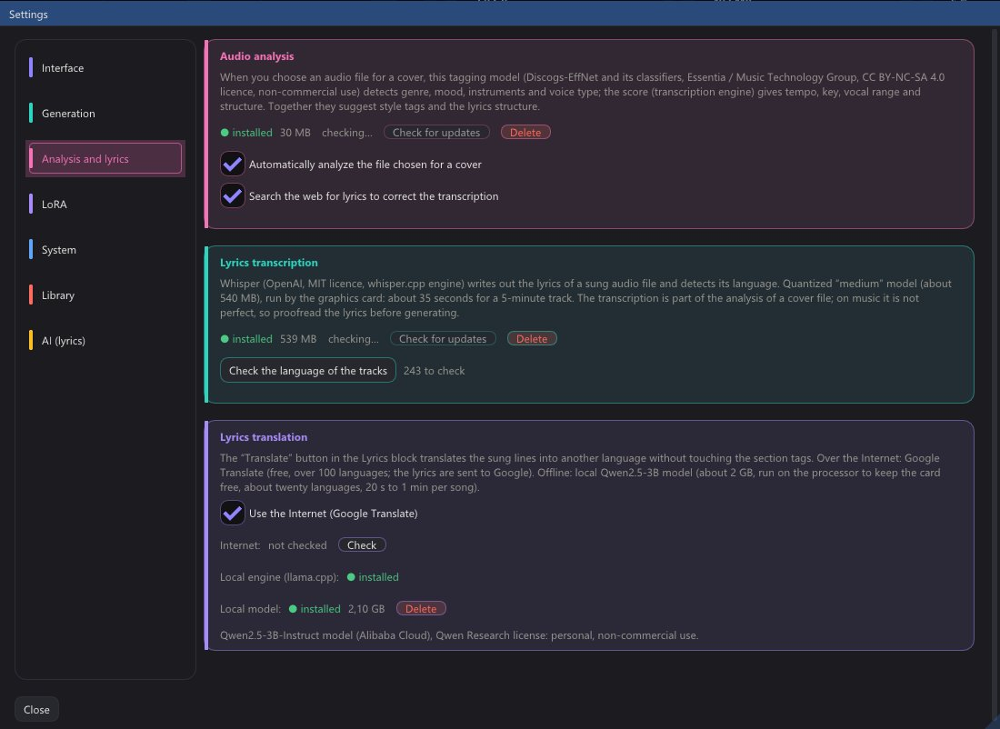
The analysis model (about 30 MB) is a set of Discogs-EffNet tagging networks and their classifiers (genre, mood, instruments, voice, key…) from the Music Technology Group (Universitat Pompeu Fabra, Essentia project), run on the CPU with ONNX Runtime; they are published under the CC BY-NC-SA 4.0 licence (non-commercial use). Tempo, key, vocal range and structure come from the score transcribed by the SheetSage2 engine already used for covers. The section offers:
- Download the analysis model — progress bar, ✕ to cancel, resumable; the files go to
modeles\analyse\. - ● installed — size, then “● up to date” or an orange “Update ↓” button when a file changed on the server; Check for updates repeats the comparison (also done at startup).
- Delete — after confirmation, removes the files from the disk (they can be downloaded again).
- Automatically analyze the file chosen for a cover — otherwise an “Analyze this file's style” button appears in the Track block.
Lyrics transcription
Quantized Whisper “medium” model (OpenAI, MIT licence, about 540 MB), run by the whisper\whisper-cli.exe engine (whisper.cpp, Vulkan: the graphics card). Same layout as the audio analysis: Download the transcription model (file in modeles\voix\), “● installed”, “Update ↓” when the file changed, “Check for updates”, Delete (confirmation). Unavailable during a generation. There is no voice separation: on very dense mixes the transcription is less faithful.
Checking the tracks' language. The “Check the language of the tracks” button (enabled when the model is installed and nothing is running) has Whisper listen to three 30 s excerpts of each sung track in the library (about 3 s per track) to determine the sung language; it compares with the declared language or the one deduced from the text and corrects the track file if the difference is clear (at least two excerpts agreeing, average confidence of at least 60%). Each track is checked only once; the “Lyrics: …” chip then reads “checked by listening to the track”. The “n to check” counter shows what is left, “Stop” interrupts, and the check stops by itself if a generation starts. Tracks marked instrumental are checked too, since lyrics sometimes slip in: if Whisper hears words in a recognized language (at least 10 distinct words), the card shows an amber “Voice detected: language” chip; the track stays instrumental. The style's language tags are not modified.
Lyrics translation
Engines behind the Lyrics block's “Translate” button. Use the Internet (Google Translate): on by default; the lyrics are then sent to Google. The connection is checked at startup (Check button). Local engine: llama.cpp, in the traduction folder next to the application (shipped with the portable version). Local model: Qwen2.5-3B-Instruct (about 2 GB, Qwen Research license, non-commercial use), downloaded here into modeles\traduction; it runs on the processor so the graphics card stays free for generations.
AI (lyrics)
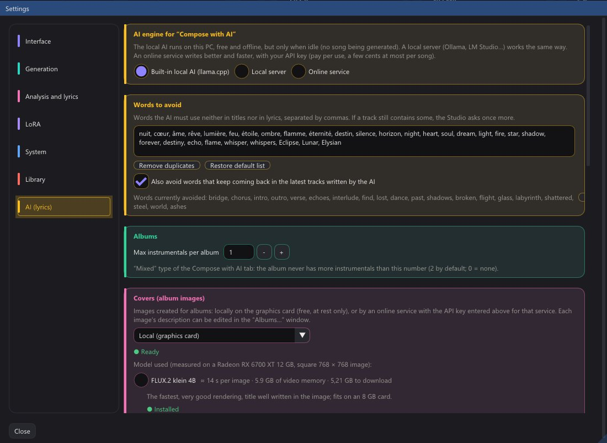
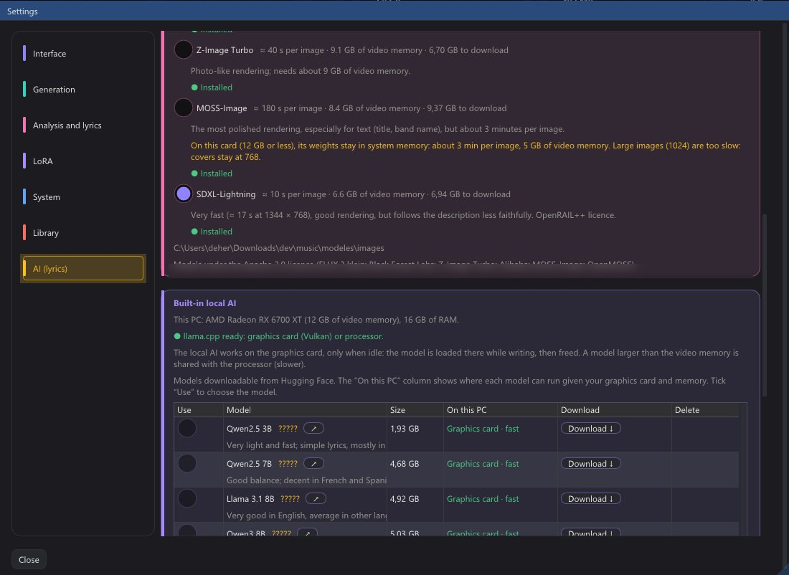
Engine of the “Compose with AI” tab. Three options:
- Built-in local AI (llama.cpp): pick a model in the table (Qwen, Llama, Gemma, Mistral… from 2 to 14 GB); each row shows its size, writing quality and whether it fits on the graphics card (fast), only on the processor (slow), or is too heavy for this PC. The model downloads from Hugging Face into
modeles\ia. The local AI always uses the graphics card: this needs llama.cpp for the graphics card, downloaded once (Download llama.cpp for the graphics card button, about 37 MB, intoia\llama; also offered in the tab). A model larger than the video memory is shared between the card and the processor (“Card + processor” column). - Local server already installed (Ollama, LM Studio, llama-server, KoboldCpp, Jan, GPT4All…): Detect button, then Connect on the server found and pick the model.
- Online service with an API key: OpenAI, Claude (Anthropic), Gemini, Mistral, OpenRouter, DeepSeek, Groq, xAI, Together, Perplexity, Fireworks, Cerebras, Cohere, Hugging Face, or any “OpenAI-compatible” service (custom address). The key is stored encrypted for your Windows account; List the models and Test buttons. The requested lyrics are then sent to that service.
Deleting all tracks
At the very bottom of Settings, the Library section offers “Delete all tracks…”. After confirmation, all the library folders are sent to the Windows recycle bin (restorable as long as it is not emptied). Album images (pochettes\) and videos are not touched. Unavailable during a generation or while the queue is not empty.
Graphics card and health test
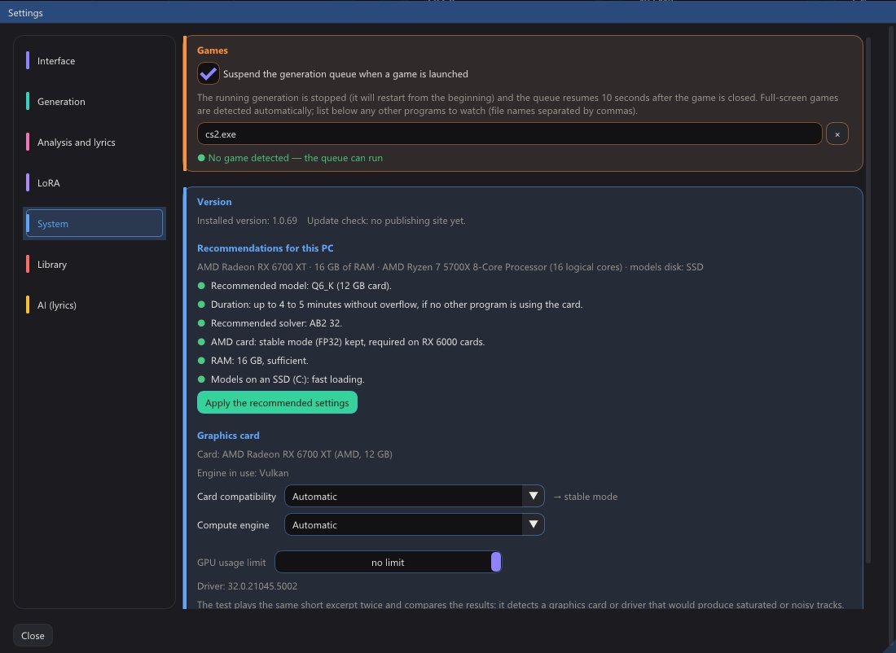
Shows the driver version. Run the health test (≈ 1 min) replays a short excerpt (48 s) twice and compares the results: a relative difference below 15 % means a stable card and driver; beyond that, the card produces unstable results (saturated or noisy tracks). The test is unavailable during a generation. The application remembers the driver version: if it changes, the Settings button turns orange and a new test is recommended.
Version and updates. At the top of the block: the installed version and the state of the update check (at startup, in the background; “Check now” runs it again). Until a publishing site is chosen, the check is disabled (“no publishing site yet”). Without a connection it gives up within a few seconds without blocking anything.
Recommendations for this PC. The app reads the graphics card, RAM, processor and the type of the disk holding the models (SSD or hard disk), then recommends: the model quantization (Q8_0 from 15 GB of video memory, Q6_K from 11 GB, otherwise Q5_K_M), the solver (ab2_32 if the card has at least 11 GB, otherwise the lighter ab3_20), and points out weak spots (less than 16 GB of RAM, models on a hard disk: slow loading). The “Apply recommended settings” button selects that model and solver (the model must be downloaded).
Detected card and compute engine. At startup, the application identifies the most powerful card in the PC (the one with the most video memory: on a laptop, the Nvidia or AMD card rather than the integrated chip) and shows its name, brand, memory and the engine in use.
- Card compatibility: Automatic (stable mode on AMD and Intel, fast mode on Nvidia), Stable (full-precision FP32 computation: required on AMD RX 6000 cards, worth trying if a track crackles or clips) or Fast (half-precision FP16, faster). Applied from the next generation.
- Compute engine: Automatic (CUDA on an Nvidia card if the CUDA engine is installed, otherwise Vulkan), Vulkan (all cards) or CUDA (Nvidia cards). Switching engines requires restarting the application.
- CUDA engine (optional, Nvidia cards):
outils\moteur\cudafolder of the application (the formermoteur_cudais still recognised), built bybuild_yue2cpp_cuda.cmd(CUDA Toolkit required) and shipped separately (StudioAudioAI-moteur-CUDA.zip, to unzip into the application folder). Untested, for lack of an Nvidia card. - On an Nvidia card, an Nvidia drivers button opens the driver download page.
GPU usage limit (30 to 100%, “no limit” by default): the engine is paused for very short intervals (a fraction of each 200 ms cycle) to give the card a break: temperature, noise, other programs. At 90, a generation takes about 1.1 times longer. During the audio phase (x/32 steps), the engine pauses after each step, in proportion to its duration. The setting applies immediately, even during a generation (from the next step). On the “GPU usage” dial, an orange mark shows the limit; on a long song each step lasts several seconds at full power, followed by a pause: the limit applies on average, which is why the gauge then shows “instant value · average” (16 s average, the one to trust).
Driver update. For an AMD card, the application reads the installed AMD Software: Adrenalin Edition version (Windows registry) and compares it, at launch, with the latest stable version published (AMD release notes relayed on GitHub, an unofficial source; year and month are compared). If a newer version exists, an orange “Update available” button appears next to the driver version (and a notification is shown once); it opens AMD's driver download page. Offline, nothing is shown. After an update, run the health test again.
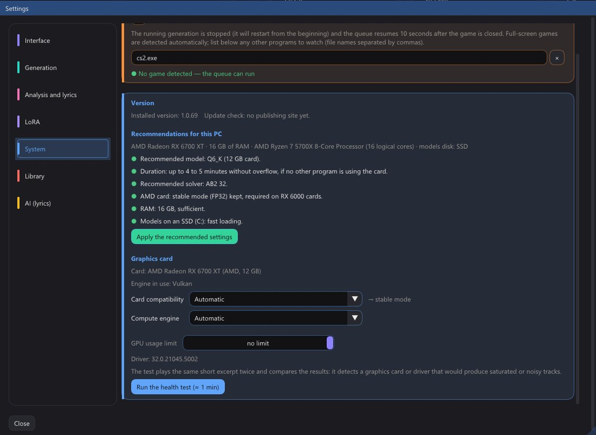
14. Performance and memory
Where does the time go?
A generation has four stages: (1) an optional score (15 to 25 s), (2) composition of the melody by the language model (50 to 110 s), (3) the “NAR” audio phase in 32 steps — by far the longest — and (4) audio decoding (≈ 5 s). The cost of the NAR phase grows faster than the track's duration: a 6-minute track costs about 2.5 times a 3 min 30 track.
The audio-phase solvers
The “midpoint” solver evaluates the network twice per step (64 evaluations). AB2 (Adams-Bashforth of order 2) evaluates it once per step after the first (33 evaluations). Measured on a 3-minute track, same composition codes:
| Midpoint | AB2 | |
|---|---|---|
| NAR phase | 297 s | 153 s (−48 %) |
| Full generation | 322 s | 178 s (−45 %) |
| Time / track duration | 1.8× | 1.0× |
AB2's spectrum and sound level are identical to the midpoint's; AB2 32 is the default solver.
A solver's name gives the method then the number of steps: MP = midpoint (2 evaluations per step), AB2 / AB3 = Adams-Bashforth of order 2 / 3 (1 evaluation per step, reusing the previous steps), Euler = simple order-1 method. The audio phase's time is proportional to the number of network evaluations. Measured on a 96 s excerpt, compared to midpoint at 64 steps (128 evaluations) taken as the reference:
| Solver | Evaluations | Speed (MP 32 = 1×) | Waveform difference | Note |
|---|---|---|---|---|
| AB3 16 | 17 | 3.8× | 4.1 % | the fastest, visible difference in the details |
| AB3 20 | 21 | 3.0× | 3.1 % | accuracy close to AB2 32, about 35 % faster |
| AB3 24 | 25 | 2.6× | 1.3 % | accuracy close to MP 32, about 25 % faster than AB2 32 |
| Euler 32 | 32 | 2.0× | 13 % | sound level (−0.44 dB) and spectrum altered: avoid |
| AB2 32 | 33 | 1.9× | 3.4 % | original fast solver (default) |
| AB3 32 | 33 | 1.9× | 1.25 % | best accuracy at the speed of AB2 32 |
| MP 32 | 64 | 1.0× | 1.1 % | reference, the slowest |
The waveform difference measures the gap with the reference; level and peak differences are below 0.1 dB except for Euler. Only listening tells whether a difference is audible: compare on your own lyrics, generating the same track with several solvers (same seed). Each track remembers its solver (visible in its statistics) and the time estimates take it into account.
Model quantizations
Test with identical seeds and lyrics on a 3-minute track: Q8_0, Q6_K and Q5_K_M run just as fast as each other (about twice the track's duration in Midpoint). The lighter quantizations only save 0.3 to 0.4 GB of video memory at peak, because only the NAR phase's weights are loaded at that moment; most of the memory comes from the attention buffers, which grow with duration. Quality was judged equivalent by ear; Q6_K is the default.
Video memory: what slows things down
- A long track uses 8.5 to 10 GB. If other programs occupy the card, Windows pushes part of the memory to RAM: steps become 2 to 8 times slower (see the “Overflow” dial).
- The big consumers observed: a file previewer left open (up to 6 GB), the Windows window manager (
dwm) which can grow over hours (from 0.2 to several GB), games, browsers with hardware acceleration. - Remedies: close these programs before a long queue; sign out and back in to Windows if
dwmexceeds 2 GB; shorten the tracks' maximum duration.
15. Subtleties and quality tips
- Composition and synthesis are two stages. “Re-render” redoes the synthesis (timbre, mix) with the same composition; “Recompose” redoes the composition. A composition flaw is not fixed by a re-render.
- Seeds. A fixed seed reproduces the composition, but computation on the graphics card is not exactly reproducible: two identical renders may differ by a few percent in waveform, with no audible difference in level or timbre.
- Languages. YuE2 is trained mostly on English. Other languages (French, Spanish, Italian, German, Portuguese, Japanese, Korean, Mandarin, Cantonese) are possible; the chosen language is the first tag of the style. The French chanson or canzone LoRA help.
- BPM. A tempo in the lyrics (“[Verse | 96 BPM]”) overrides the style's.
- Sections. A song needs text under the sung sections. Avoid leaving [Verse] and [Chorus] empty; “Adapt to YuE2 format” copies empty repeated choruses.
- Automatic duration of a song: the model concludes at the end of the lyrics (6 minutes maximum). With a fixed duration, a ceiling that is too short cuts the track with a fade.
- Audio files. WAV is the engine's raw output (true peak at 0 dBFS, no clipping). FLAC and MP3 get 1 dB of headroom to avoid overs on re-encoding or on some converters. Built-in playback uses the WAV.
- Vulkan stability. The engine runs with FP32-precision kernels (variables
GGML_VK_DISABLE_F16,GGML_VK_DISABLE_INTEGER_DOT_PRODUCTandGGML_VK_DISABLE_MMVQ) and the options--no-fa --clamp-fp16: on AMD RDNA2 cards, half-precision kernels were unstable and produced crackling and saturation. The application applies them automatically. - Influence profiles. They add the sound tags of a band or genre to the style; the effect is not guaranteed.
- Several LoRA. Stack with moderation: high strengths on several LoRA of the same half of the model can degrade the composition.
16. Files and folders
Everything the Studio needs is in its own folder: it reads and writes nothing elsewhere (except the files you choose yourself, such as a videos folder or a file to cover). You can copy it to another disk or another PC.
| Item | Content |
|---|---|
Studio Audio AI.exe, onnxruntime*.dll, msvcp140*.dll, vcruntime140*.dll | The application and its libraries (ONNX Runtime runs the audio analysis model). |
LISEZMOI.md | Quick overview and first launch. |
outils\moteur\ | The yue2.cpp (Vulkan) synthesis engine: yue-synth.exe, yue-transcribe.exe, ggml*.dll. Optional CUDA engine (Nvidia cards) in outils\moteur\cuda\. |
outils\ffmpeg\ | ffmpeg.exe, ffprobe.exe: FLAC/MP3 conversions, exports, videos, analysis. |
outils\whisper\ | Lyrics transcription engine (Whisper). |
outils\llama\ | llama.cpp for the processor: offline lyrics translation. |
outils\llama-vulkan\ | llama.cpp for the graphics card, downloaded from the Compose with AI tab. |
outils\sd-vulkan\ | stable-diffusion.cpp: creates the covers and clip images. |
ressources\aide\, ressources\langues\ | This help (aide.html in French, aide.en.html in English) and the interface translation files (one JSON file per language). |
modeles\ | musique\ (music models), lora\ (LoRA), analyse\, voix\, traduction\, ia\: models downloaded at first launch or in the Settings. |
Audios\<band>\<album>\<NN. title>\ | (1.0.43) One folder per band (“Sans groupe” when none is given), then per album (with its pochette, pochette_youtube, pochette_tiktok images and its videos in videos\), then one folder per track, named “01. Title” (without album: directly in the band folder). Changing the band, album or title (“Edit”, “Albums… › Rename…”) moves the folder. Each track: meta.json (record), request.json (request), audio.json (codes for re-render and extension), audio.wav, audio.flac, audio.mp3, generation.log. The package includes two demo tracks. |
config\ | (1.0.41) Your personal files, to back up: reglages.json (settings, chosen covers…), styles.json (styles, structures and packs), mots_a_eviter.json (AI words to avoid), cles_api.json (online service keys, encrypted by Windows: they only work on this PC and for this account, to be entered again on another PC), dernier_album.json (last album written by the AI). |
cache\ | (1.0.41) Disposable files: brouillon.json (current form), sante\ (graphics card health test), temp\ (temporary files and logs). |
donnees\ | pochettes\ (images of albums that no longer have tracks; since 1.0.43 the others are in their album folder) and, after the 1.0.41 update, _ancien_studio_reglages.json (old settings file, kept for safety). |
Audios\…\videos\YouTube\, TikTok\, IG\ | YouTube, TikTok and Instagram videos, in the album folder (or the band folder for a track without album); no folder to choose any more (1.0.43). |
LICENSES\ | Component licences. |
Previous versions kept these items elsewhere (voix\, traduction\, models\, bibliotheque\…): on the first launch of a recent version, they are moved automatically to the right place, without overwriting anything (log: cache\migration.log).
17. Troubleshooting
| Symptom | Likely cause and remedy |
|---|---|
| “Cannot find the synthesis engine” | yue-synth.exe must be in the application's folder (or in yue2.cpp\build\Release for a development setup). |
| The model download stopped | Restart the application: it resumes where it stopped. |
| Very slow generation | Look at the “Overflow” dial. Close programs that use the card; sign out / back in to Windows if dwm is bloated. |
| Crackling or saturated tracks | Recompose the track; run the health test; check the graphics driver (the orange Settings button signals a change). |
| The track ends abruptly | Duration ceiling reached: increase the duration, or lengthen the fade / tick “Fade out on the structure”. |
| The Generate button is grayed out | Fill in the name, the style and (for a song) the lyrics. |
| “Re-render” or “Extend” grayed out | The track's audio.json file is missing, or the track already reaches 6 minutes. |
| A preset LoRA “not installed” | Download it in Settings › LoRA. |
| The “Cover” option is grayed out | The SheetSage2 and MERT models are missing from modeles\musique. |
| No cover in the cards | Choose an image in “Edit” or “Albums…”; without a square image, the album's YouTube or TikTok image is used. |
| The help page does not open | The aide folder must be next to the application; the page opens in your default browser. |
| Texts cut off or overlapping | Enlarge the window (minimum 1180 px wide); if a translation is too long, shorten it in its langues\ file. |
18. Licenses and credits
- Studio Audio AI: native C++20 application (Win32, Direct3D 11, Dear ImGui, yyjson).
- Engine: yue2.cpp (MIT license), with local fixes; AB2 and AB3 solvers after Riff's proposal, taken up in timoncool's fork (MIT).
- Models: YuE2 (m-a-p) and Serveurperso's GGUF conversions — CC BY-NC 4.0 license, non-commercial use.
- LoRA: each belongs to its author (Mothersuperior, becausereasons, atomtanstudio, monsterovich, HaileyStorm, ntc-ai, pduncan, storagejuju, akbargherbal, supermind, goldhub…); own license, most often non-commercial.
- FFmpeg (“full” build from gyan.dev, GPL v3) — ffmpeg.org.
- Feature ideas inspired by the YuE2-Studio project (MIT).
19. Change log
This help is updated with every added or modified feature. The French version (aide.html) is the reference; this English version follows it.
| Date | Change |
|---|---|
| 6 Nov 2026 (1.0.99) | Reliability, no visible change: the programs started by the Studio (engine, ffmpeg, Whisper, text AI, images) go through a single launcher. They stop with the Studio, even after a crash (no text AI or image server left in memory); the text AI and the image server use a free port (two Studios or two AIs no longer get in each other's way); the music engine's FP32 settings can no longer go missing when an AI starts at the same moment; a task can no longer stay stuck “running” because another program started at the same instant. |
| 6 Nov 2026 (1.0.98) | Music video workshop: end text in the centre or at the bottom, with an optional dark background; Same seed for all images of a video box (more consistent character and setting, not guaranteed); Write the text sheets in a track's Actions ▾ and an album's “…” menu, for tracks made before the sheets existed. |
| 6 Nov 2026 (1.0.97) | Audio tools: a track's Actions ▾ (and an album's “…” menu): Master (normalised loudness −14 / −11 / −16 LUFS, limited peak, files in the “master” folder), Synchronised lyrics (paroles.lrc and paroles.srt aligned by Whisper), Separate stems (vocals, drums, bass, other: demucs.cpp engine included; its 84 MB model downloads on click, about 4 to 5 times the track length), Export for music software (audio, ABC score, lyrics, stems, tempo and key in the name), Publication sheet (title, description and hashtags by the local AI, YouTube Studio / TikTok buttons), album PDF booklet. Albums…: Duplicates… (almost identical compositions or lyrics). Several versions of one submission: the best one is named at the end. Generation queue: “When the queue is finished” (nothing, sleep, shutdown after 60 s) and a “rapport_nuit.txt” report. New: the search box also looks inside lyrics. Also: Key and tempo check (SheetSage2 listens again and compares with the score or BPM; red thumb on drift; optional after each queue), Disk space and cleanup (Settings › System: sizes, sent to the Recycle Bin on confirmation), One-click update (downloads the GitHub release, verifies its SHA-256, backs up, keeps settings/tracks/models/LoRAs, restarts), a Question… button (the local AI answers from the built-in help) and Karaoke in “Create videos” (scrolling lyrics read from paroles.lrc). Added on 6 Nov: Score of all instruments (stems) (Actions ›: SheetSage2 transcribes the separated vocals, bass and other instruments, shown on separate, fully editable staves in the Score workshop; drums ignored; approximate alignment); “of this track / of the album” labels for the key and tempo check; Score workshop zoom fixed for multi-measure rests. Instruments per staff and sound banks in the Score workshop: choose each staff's instrument (bass, guitar, voice, strings, brass…); Settings › System › “Score workshop sounds” downloads on click the instruments (FluidR3 GM samples, ≈ 2.5 MB each) and SoundFont banks (GeneralUser GS 31 MB, FluidR3 GM 142 MB); “Listen (SoundFont bank)” plays the score with the bank (built-in TinySoundFont engine) and “Export as audio…” writes a WAV file. |
| 6 Nov 2026 (1.0.96) | Search: the Library search box also looks inside the lyrics and structures of tracks. |
| 6 Nov 2026 (1.0.95) | Library: a “Lyrics” button on every track (detailed, compact and cover cards) opens a window with the structure (bracketed sections) and the lyrics, selectable and copyable text (Ctrl+C, right-click: “Copy selection” / “Copy all”), with “Copy lyrics”, “Copy structure” and “Copy all” buttons. Instrumental track: structure only; long track: lyrics of all its parts. |
| 5 Nov 2026 (1.0.94) | Score workshop, editing: click a note, then ▲ ▼ (keyboard arrows; Shift + arrow = octave), ♯ ♭ ♮, durations from whole to sixteenth note, dotted note, rest, duplicate, delete, chord above the note; left/right arrows move from note to note; Undo / Redo (Ctrl+Z / Ctrl+Y); measures with a wrong length are flagged; “Lyrics…” places the lyrics under the sung melody, one syllable per note (also in the MusicXML export); “ABC text” edits the score as text, redrawn at once. |
| 5 Nov 2026 (1.0.93) | Score workshop, import: “Import…” opens a MusicXML (.musicxml, .xml, .mxl), MIDI (.mid) or ABC file; the score is converted to the engine’s format (sung voice and instrument; MIDI: rhythms rounded to sixteenth notes, key and chords estimated) and “Use in the Studio” places it in the “Score” tab. “Score” tab: “Import MusicXML or MIDI (Score workshop)…”. Test: “Ode to Joy” imported as MIDI, song generated with it, 97% of the melody notes found in the singing (D major, 99 BPM). |
| 5 Nov 2026 (1.0.92) | Score workshop, exports: MIDI…, MusicXML… and ABC… buttons (the Studio asks where to save). MusicXML keeps notes, durations, measures, rests, ties, triplets and chord symbols; it opens in MuseScore, Finale, Sibelius or Dorico. Round-trip check ABC → MusicXML → ABC on 10 scores: 100% identical notes and chords. |
| 5 Nov 2026 (1.0.91) | Score workshop: “View as notes…” (in the “View the score…” window and the “Score” tab) opens a Studio window showing the score as real notes (abcjs library, in the WebView2 engine included with Windows): sung voice and instrument (automatic bass clef for a low instrument), chords, title, key, tempo; offline piano playback with the playing note highlighted, zoom, printing and A4 PDF export. |
| 5 Nov 2026 (1.0.90) | Consistent long tracks: when part 1 has a score, parts 2 and 3 keep its key and tempo. Each continuation's score is prepared from its lyrics, transposed to the previous part's key and set to its tempo, then the engine continues the track following it (≈ 20 to 60 s more per part). Test on 3 parts: the same key (D♯ minor) heard in every part, tempo 126 to 128. |
| 5 Nov 2026 (1.0.89) | Recognised score: in the “Score” tab, “Recognise the score of an audio file…” has SheetSage2 listen to a track (≈ 1 min for 3 min of music); its score (key, tempo, sections, chords, melody) comes into the tab, where you transpose or edit it, then generate with your own lyrics and style: like a cover, but the score is visible and editable. Also: “Open a score (.abc)…”, and Actions › “Recognise its score…” for a library track that has none. |
| 5 Nov 2026 (1.0.88) | “Score” tab (next to “New track” and “Compose with AI”): “Prepare the score” has the model write the score alone (≈ 1 min) from the title, style and lyrics of “New track”; you check it (key, tempo, time signature, chords per section), transpose it (± 1 semitone, notes and chords), change its tempo (the style's “BPM” follows) or its text, then “Generate with this score”. Actions › “Use this score…” takes a track and its score to replay it, transpose it or redo it in another style. |
| 5 Nov 2026 (1.0.87) | Score: the composition mode “Full (melody + chords)” becomes the default for a new track (≈ 28% more time; key, tempo and chords are followed). The score written by the model is kept in the track folder (score.abc). The detailed card shows its key and tempo; Actions › “View the score…” shows the key, tempo, time signature, the chords of each section and the full text. “No score (faster)” and “Melody only” remain available. |
| 5 Nov 2026 (1.0.86) | The source code of Studio Audio AI is released under the MIT licence (LICENSE file in the repository, copied into the program's LICENSES folder); the model licences do not change. The exe properties no longer show a publisher name. |
| 5 Nov 2026 (1.0.85) | Influence profiles: they no longer contain any real singer or musician name, only the sound of the band or genre (genres, era, instruments, voice type). An AI album with no band name is called “Studio Audio AI” (never “<influence> Tribute” again). |
| 5 Nov 2026 (1.0.84) | Settings › System: “Model licences” card. Selling the tracks, covers and videos is subject to the licences of the models used: YuE2, MERT-v2 and SheetSage2 under CC BY-NC 4.0 (non-commercial), Essentia under CC BY-NC-SA 4.0 (non-commercial), Whisper under MIT, FLUX.2 klein, Z-Image Turbo and MOSS-Image under Apache 2.0, SDXL-Lightning under CreativeML OpenRAIL++-M, text AI depending on the model (Apache 2.0, Qwen Research non-commercial, Llama 3.1, Gemma), each LoRA under its own. The Settings window also re-centres when the Studio window changes size. |
| 5 Nov 2026 (1.0.83) | Quality check without listening: in Albums…, “Quality check (library)” and, in an album's “…” menu, “Album quality check”. For each track: length far from the target, lyrics poorly recognised or end of the text not sung (Whisper), silence of 5 s or more, last part of a long track too short. Tracks to redo get a red thumb (except those you validated); details are in “controle_qualite.txt” (album folder, or the Audios folder for the whole library). |
| 5 Nov 2026 (1.0.82) | Shorts in series: in Albums…, the “Missing Shorts (library)…” button and, in an album's “…” menu, “Missing Shorts of the album…” create a Short for every finished track that has none yet, in the same queue as the clips. Each Short is saved in its album's “videos\Shorts”; images of an existing clip are reused; a window first shows how many tracks are concerned. |
| 5 Nov 2026 (1.0.81) | Automatic backup, once a day at startup, in the program's “sauvegardes” folder: settings, styles, words to avoid, list of models and LoRA, each track's sheet (15 days kept). At startup, a model or LoRA gone since the last backup, or a LoRA missing from your styles, is reported in a window and in Settings › System. |
| 4 Nov 2026 (1.0.80) | Albums…: “Redo covers” button at the end of the “Images” line when all 3 images exist (1:1 cover, YouTube 16:9 and TikTok 9:16 recreated after a “Replace all” confirmation). |
| 4 Nov 2026 (1.0.79) | Albums…: “Shorts” indicator next to YouTube, TikTok and Instagram (“Videos n/4” tab); the “Covers” button sits at the end of the “Images” line. |
| 4 Nov 2026 (1.0.78) | Albums…: “Covers” button when an image is missing (creates only the missing ones); Create videos: “Generate” button under a missing image; Compose with AI: “Clear fields” button; library: 4th logo for Shorts; the track count no longer overlaps “Play new” (it moves to the title tooltip when space is short). |
| 3 Nov 2026 (1.0.77) | Updates: at each start, the Studio checks the latest version published on GitHub; if it is newer, an “Update (x.y.z)” badge appears next to the version number and opens its download page. Offline, nothing is shown. |
| 3 Nov 2026 (1.0.76) | “Create videos” window as wide as the Studio: formats, images and output files on the left, clip and Short settings on the right (one column when the window is narrow). |
| 3 Nov 2026 (1.0.75) | Short: length list next to the box (15, 30, 45, 60 or 90 s), 30 s by default, the recommended length to introduce a track; choice remembered. |
| 3 Nov 2026 (1.0.74) | Create videos › Real clip: “30 s Short” box: a 30-second vertical 9:16 excerpt per track, starting 2 s before the chorus, with the clip's images and lyrics and a sound fade (album “Shorts” folder, one file for YouTube Shorts and TikTok). |
| 3 Nov 2026 (1.0.73) | Compose with AI: more varied lyrics. A verse or bridge line copied from earlier in the song, or from an earlier song of the album, is removed and rewritten; returning choruses keep their first two lines and change the others. |
| 2 Nov 2026 (1.0.72) | Much faster Z-Image Turbo: about 33 s per 1344 × 768 image in a clip, with a nearly identical look (a new 3.4 GB model file must be downloaded if you used it). |
| 2 Nov 2026 (1.0.71) | “Very long” track: the lyrics continuation is more reliable (over 110 lines in every test). |
| 2 Nov 2026 (1.0.70) | Mixed album: 0 instrumentals now means none. “Very long” track: 3 parts, lyrics extended by the AI up to about 110 lines, and a part ended too early by the engine is redone automatically. |
| 31 Oct 2026 (1.0.69) | Help reviewed and updated (albums, clips, dials, folders), 26 new screenshots in French and English. |
| 31 Oct 2026 (1.0.68) | Header: the “Local generation · YuE2-3B · Vulkan” text is removed to leave more room for the dials. |
| 31 Oct 2026 (1.0.67) | Needle dials in the header instead of the four bars, in Sport or Compact style (Settings › System). |
| 31 Oct 2026 (1.0.66) | The window header now shows the new name, Studio Audio AI. |
| 31 Oct 2026 (1.0.65) | License system removed: no more 3-day trial, code to enter or limited version. All features are open to everyone, and the license generator is no longer shipped. |
| 31 Oct 2026 (1.0.64) | Clips: an incomplete answer from the local AI no longer leaves the clip with the cover alone; an unreadable part of the scenario is skipped and the other scenes share its images. |
| 31 Oct 2026 (1.0.63) | Library: a still video also lights its platform logo, in a dimmed colour; full colour stays reserved for clips. |
| 31 Oct 2026 (1.0.62) | Library: a YouTube, TikTok and Instagram logo on each song's title line, folded or unfolded; grey until the clip exists, in colour once it is created. |
| 31 Oct 2026 (1.0.61) | Clips: scripts for all songs are written first, then the image model stays loaded from one song to the next: ≈ 9 s per SDXL-Lightning image instead of 13 s, and ≈ 3 min for a 3 min 20 clip in one format. |
| 31 Oct 2026 (1.0.60) | Clips: camera shots reviewed, the top of the image stays visible and heads are no longer cut off; gentler zooms. |
| 31 Oct 2026 (1.0.59) | Clips: editing more than twice as fast (11 min → 5 min for a clip in 3 formats), with the same look. |
| 31 Oct 2026 (1.0.58) | New local image model SDXL-Lightning (6.5 GB download, ≈ 17 s per image at 1344 × 768, OpenRAIL++ licence): the fastest, but it follows the description less faithfully. FLUX.2 klein keeps its weights in system memory on cards of 12 GB or less: at 1344 × 768, an image goes from 81 s to 27 s. Clips: lyrics are aligned once per song, whatever the number of formats. |
| 30 Oct 2026 (1.0.57) | Albums… › “…” › Write the descriptions (local AI): a “description.txt” file for the group, the album and each song, in the interface language; an existing file is never replaced, so you can edit it by hand. Real artist names quoted in styles are not passed to the AI, and a text containing one is not written. “Create videos” window: correct “_Clip” file names, estimated image and editing time, aligned fields. |
| 30 Oct 2026 (1.0.52 to 1.0.56) | Clip workshop: real animated clips built from the lyrics. In “Create videos” (or the Clip button on a track card, “Animated clip…” in the right-click menu for a single track), tick “True clip”. The Studio syncs the lyrics to the sound (Whisper), the local text AI tells the story of the song from the lyrics and the track, album and band sheets, then the local image model (FLUX.2 klein by default) makes one image per scene; ffmpeg does the editing (slow zooms, fades, lyrics as subtitles). Settings in the window: render style (realistic, comic, American comics, manga, anime, watercolor, oil, neon, black and white, 3D, retro), image engine, number of images (recommended per track from the lyric lines, or more, fewer, or fixed up to 60), start and end texts (“Rock Ballads Fr”, “Subscribe”…); the title, band and album are shown at the start. Clips go into the album’s YouTube / TikTok / IG folders (suffix “_Clip”). Long tracks made of 2 parts: the clip follows both parts. Text sheets: “paroles.txt” (editable: the clip uses it), “fiche.txt”, “fiche_album.txt” and “fiche_groupe.txt” written when each track is finished. The progress bar shows “Video i / N”. Story and images are kept in the track’s “clip_scenes” folder (reused; “Redo” box to start over). Full licences only; run while idle (graphics card free). Translations completed (9 languages). |
| 29 Oct 2026 (1.0.51) | “Albums” window reorganised: one compact row per album (cover, green or grey lights for the 3 images 1:1 / 16:9 / 9:16 and the 3 videos YouTube / TikTok / Instagram, Export, Videos, Complete and “…” for Rename, Open folder and Delete). A click on the arrow or the cover opens a two-tab card: Covers (the 3 images and the description, taller, editable and wrapped) and Videos (status of each format, videos folder). “Generate / Regenerate ▾” and “All covers ▾” open a menu to pick the image model for this time only (FLUX.2 klein, Z-Image, MOSS-Image or the default setting); the default setting does not change. |
| 28 Oct 2026 (1.0.50) | Local covers: three models to choose from in Settings › AI › Covers, each downloaded only if you click: FLUX.2 klein 4B (default: ≈ 14 s per image, 5.9 GB of video memory, 5.2 GB to download, title well written in the image, fits on an 8 GB card), Z-Image Turbo (≈ 40 s, 9 GB, 6.7 GB to download) and MOSS-Image (the most polished text but ≈ 3 min per image, 9.4 GB to download; on a card of 12 GB or less, its weights stay in system memory). stable-diffusion.cpp image engine updated. Measured on a Radeon RX 6700 XT 12 GB, 768 × 768 images. All three models are under the Apache 2.0 licence. |
| 28 Oct 2026 (1.0.49) | “Compose with AI”: the lengths now give different durations (the AI writes the requested number of lines, and the track sent follows the length of the lyrics instead of a fixed duration): Short ≈ 2-3 min, Normal ≈ 3-4 min, Long ≈ 5-6 min, and new length Very long (≈ 9-11 min, 2 parts): the AI writes a long structure and the “Long track: 2 chained parts” box is ticked automatically when sent (single track, or each track of an album). The split into two parts preferably cuts at the start of a verse, interlude or bridge. The box is no longer marked “experimental”. |
| 28 Oct 2026 (1.0.48) | Prototype Long track: 2 chained parts (box under the duration in “New track”): the model only composes 6 minutes at once; the lyrics are cut between two sections near the middle, part 1 is generated, then part 2 starts by itself and continues part 1 from its last 25 seconds; both are joined with a 3-second crossfade (up to about 11 minutes). The complete track is in part 2 (part 2 alone is kept as partie2_seule.wav); part 1 stays in the library. Experimental: check the joins by ear. |
| 28 Oct 2026 (1.0.47) | Clearer track buttons: New version (same lyrics) (formerly “Recompose”), Edit and resend… (formerly “Reuse”); Redo the sound (same composition) (formerly “Re-render”) is in the Actions ▾ menu. “Albums…”: Complete… adds tracks to an album with “Compose with AI” (same band, same sound, new titles, following track numbers). “Compose with AI”: Existing band… list to make a new album for a band already created (sound kept, existing titles and albums avoided). The common sound of each AI-written album is now remembered. |
| 28 Oct 2026 (1.0.46) | “Albums…”: Delete album… (its whole folder — tracks, covers, videos, exports — goes to the Windows Recycle Bin, after confirmation); Export… writes to the Audios subfolder of the album folder; All covers creates the 1:1 cover and the YouTube and TikTok images at once (missing ones only, or replace all); clicking an image shows it large. Library: Play new tracks plays in a row the finished tracks not listened to yet (Stop and Next buttons); Personal style… on each track saves it to your styles (with its LoRAs and style to avoid); more album colours (24), never the same twice while there are fewer than 24 albums. Right-click Cut / Copy / Paste in every text field. Icon next to the clock: it alternates every 2 seconds between the queue (violet) and the tracks not played yet (red); the separate red icon is removed. “Recompose” now keeps the style to avoid. |
| 25 Oct 2026 (1.0.45) | The publisher's workshop is tidied up (sources and build tools kept apart); the style creator's packs are stored in its own folder. No change in how the Studio is used. |
| 25 Oct 2026 (1.0.44) | Restructuring, step 4: the publisher's tools (licence generator, style creator, Forge) are stored in Admin_tools\, one folder per tool, and shipped in a separate second package (StudioAudioAI-Admin) that never contains keys or settings. The public package is unchanged. |
| 25 Oct 2026 (1.0.43) | Restructuring, step 3: your tracks are stored in Audios\, one folder per band, then per album, then one folder per track named “01. Title”. The album covers and videos (videos\YouTube, TikTok, IG) are in the album folder. Editing the band, album or title moves the folder; “Albums… › Rename…” also moves the covers and videos. The old bibliotheque folder and the covers in donnees\pochettes are moved automatically at first launch (records backed up in cache\sauvegarde_meta_1.0.43, moves written to cache\migration.log). |
| 25 Oct 2026 (1.0.42) | Restructuring, step 2: all models are stored by type in modeles\ (musique, lora, analyse, voix, traduction, ia, images, entrainement) and all tools in outils\ (moteur, ffmpeg, whisper, llama, llama-vulkan, sd-vulkan); help and languages in ressources\. Old folders (models, moteur, whisper, traduction, ia\llama, aide, langues) are moved automatically at first launch, without deleting anything; each move is written to cache\migration.log. |
| 25 Oct 2026 (1.0.41) | Restructuring, step 1: your personal files are stored in config\ (settings, styles, words to avoid, API keys, licence, last album), disposable files in cache\; your old settings are moved automatically at first launch (the old file is kept in donnees\). The licence is saved in config\licence.lic: copy this file into the config folder of another installation and the Studio unlocks itself at startup. Square 1:1 videos for Instagram (IG folder). “Albums…”: Rename… button (band and album title, covers kept). |
| 25 Oct 2026 (1.0.40) | The program is now called Studio Audio AI (formerly Studio YuE2; the music model is still YuE2). Icons next to the clock: one function each, violet for the number of tracks in the queue, red (application minimised) for the number of finished tracks. Tracks of an AI-made album are named “01. Title”, “02. Title”… |
| 25 Oct 2026 (1.0.39) | Library: track cards with square corners (background, border, colour stripes, cover), cleaner with the stripes; the rest of the interface keeps its rounded corners. |
| 24 Oct 2026 (1.0.38) | Library: the colour stripe of album tracks moves to the right edge of the cards, more visible and distinct from the status colours on the left. |
| 24 Oct 2026 (1.0.37) | Progress window in the middle of the application while covers are created; album tracks marked in the library (coloured stripe, “Album · #track” label, click = album filter); yellow hints of “Compose with AI” and Settings › AI wrapped inside their frames; AI instrumentals without vocals (forced style and voices added to the style to avoid); a title that still contains a word to avoid is asked again on its own; “Create an album of 10 tracks…” summary with real plurals; long sentences (licence, analysis, updates, downloads, errors) wrapped inside their frames. |
| 24 Oct 2026 (1.0.36) | AI-made covers: locally (Z-Image Turbo on the graphics card) or online (OpenAI, xAI, Together, compatible service); “Create the covers” box for “Compose with AI” albums, “Generate / Regenerate” buttons and an editable description in the “Albums…” window (which also lists waiting albums). The tracks of an AI-written album show in “Result” with one click, and the last album is kept. |
| 24 Oct 2026 (1.0.35) | Compose with AI: LoRA block in the tab, shared with “New song” (what is ticked in one is ticked in the other); “Mixed” albums limited in instrumentals (“Max instrumentals per album” setting in Settings › AI, 2 by default, from 0 to 50). |
| 24 Oct 2026 (1.0.34) | Compose with AI: band name and album title checked against the words to avoid (except the ones you type); “Save as a personal style” button (single track, album sound, each track); “Styles to avoid” field as in “New song”, applied to the tracks sent. Settings › AI: words to avoid with automatic line wrap and a “Remove duplicates” button. |
| 23 Oct 2026 (1.0.33) | Compose with AI: a whole album at once (1 to 50 tracks, optional album title and band name, songs, instrumentals or mixed); each track goes to the queue, paused, with the LoRAs and settings of “New song”. Words to avoid (Settings › AI) and automatic avoidance of recurring words, so tracks do not sound alike. |
| 23 Oct 2026 (1.0.32) | Each copy of the Studio now only uses its own folders: models and LoRAs in models, settings and styles in donnees, tracks in bibliotheque. Choosing another models folder is no longer possible (the old studio_modeles.txt file is set aside as _ancien_studio_modeles.txt). Deletions show the full path and are refused outside the program folder. |
| 23 Oct 2026 (1.0.31) | Release: tick and cross marks by default to validate or flag a track, as in the reference version. Existing settings are unchanged. |
| 23 Oct 2026 (1.0.30) | Release version: tidy folders (moteur\, outils\, ressources\, models\, donnees\), program fully self-contained in its folder (temporary files and models path included), lighter ffmpeg, two demo tracks. The library reads the disk less often. Settings and covers from previous versions moved automatically. |
| 23 Oct 2026 (1.0.29) | Deleted LoRAs are no longer requested. An instrumental is generated without the instrumental LoRA if it was deleted (engine choice greyed on “Base model”), instead of failing; same for “Relaunch”, “Reuse”, re-render and extend. |
| 23 Oct 2026 (1.0.28) | Compose with AI: instrumentals are now sent to “New song” (structure read better, an existing title no longer blocks it); the local AI always uses the graphics card (download button for llama.cpp for the card in the tab, models too large shared with the processor); AI answer shown as readable text, without JSON; “Compose” button without an unreadable symbol. |
| 23 Oct 2026 (1.0.27) | Fix: the Compose with AI tab did not appear next to “New song”. |
| 23 Oct 2026 (1.0.26) | New Compose with AI tab: an AI (built-in, local server or online service with an API key) writes title, style, language and lyrics from the chosen language, influence and theme; answer cleaned to YuE2 format then sent to “New song”, raw answer copyable. Settings › AI (lyrics): Hugging Face models suited to the PC, local server detection, encrypted API keys. |
| 23 Oct 2026 (1.0.25) | LoRA: the trigger word of ticked LoRAs is always put back in the style (at startup, after a preset, “Reuse”, or right before generation). The word the LoRA learned wins over the one in its .json sheet. LoRAs without a trigger word, still applied during generation, say so on hover. |
| 22 Oct 2026 (1.0.24) | Settings › LoRA: My LoRAs table for personal LoRAs (name, type, size, trigger word, details, description on hover), read from a .json file with the same name or from the file header. Their trigger word is added to the style when ticked. |
| 22 Oct 2026 (1.0.23) | Inspiration track analysis: much more accurate styles (spectrogram computation aligned with the Essentia models; e.g. AC/DC’s “Dirty Deeds” now comes out as hard rock, no longer soukous). |
| 22 Oct 2026 (1.0.22) | Publisher tool for style packs: more reliable genres (averaged scores, cross-checked with MusicBrainz). No visible change in the Studio. |
| 22 Oct 2026 (1.0.21) | Publisher tool for style packs: right-click Cut / Copy / Paste menu in its fields. No visible change in the Studio. |
| 22 Oct 2026 (1.0.20) | Groundwork for the style packs offered for import (publisher tool). No visible change in the Studio. |
| 22 Oct 2026 (1.0.19) | The structure list no longer widens to the whole screen after saving a personal structure. Pack already installed: “Replace the pack” or “Keep both” (second row “Name (2)” in the packs table, removable separately). |
| 22 Oct 2026 (1.0.18) | Personal structures: “Save the current structure…” in the structure list, under “My structures”. Styles, structures and packs (Settings › Generation): export and import of .yue2pack files, drag and drop onto the window, pack items listed under their name, Replace / Keep both / Skip choice, pack removal. |
| 21 Oct 2026 (1.0.17) | License generator: its own icon, the Studio icon with a golden key. |
| 21 Oct 2026 (1.0.16) | License generator (publisher tool, not distributed): a real window in the Studio's colors, table of created licenses with quick search and status filter; keys and register stored in the licences folder, next to the generator. |
| 21 Oct 2026 (1.0.15) | License: 3-day full trial, then a limited version (advanced features greyed out) until a license code is entered in Settings › System › License. Signed codes, created by a generator reserved for the publisher. |
| 21 Oct 2026 (1.0.14) | Gauges and progress bars (generation, analysis, translation, downloads, icons near the clock) with a green to bright red gradient, through yellow and orange. |
| 21 Oct 2026 (1.0.13) | “GPU usage” gauge with a limit: it shows the instant value and the average of the last 16 seconds; the bar and its colour follow the average. |
| 21 Oct 2026 (1.0.12) | GPU usage limit now also works during the audio phase (the x/32 steps): the engine itself pauses between two steps. “GPU usage” gauge: orange arrow at the set limit, red bar above it. |
| 21 Oct 2026 (1.0.11) | Offline translation fixes (more reliable line numbering with the local model, “[end of text]” removed); translation error messages translated into every interface language. The portable version includes the llama.cpp engine (traduction folder). |
| 21 Oct 2026 (1.0.10) | Lyrics translation (Lyrics block: language list and “Translate” button, structure untouched; free Google Translate or offline local model). Minimized app: CPU, GPU, GPU memory gauges and counters (waiting, finished) near the clock. Presets: the style to avoid is saved. Settings › System: GPU usage limit. |
| 21 Oct 2026 (1.0.9) | Fix: the tooltip of the quick-tag crosses was unreadable (dark text on a dark background). |
| 21 Oct 2026 (1.0.8) | “Style to avoid” quick tags are now editable: a term typed in the field is added automatically, a cross on each tag deletes it (with confirmation), and a new block in Settings › Generation lets you add, delete or restore the default list. |
| 21 Oct 2026 (1.0.7) | Style block: “Style to avoid” field (negative tags, experimental) with a strength slider. Modified yue2.cpp engine (CFG guidance with a negative text, patch patches\yue2cpp_negative_style.patch). |
| 21 Oct 2026 (1.0.6) | Before each generation, the app checks the free video memory. If it is not enough, a “Not enough video memory” window lists the programs using the card and offers: Generate anyway, Add paused, open Task Manager, or Cancel. |
| 21 Oct 2026 (1.0.5) | Settings › System: “Recommendations for this PC” block (graphics card, RAM, processor, type of the models disk) with the recommended model and solver, and an “Apply recommended settings” button. |
| 21 Oct 2026 (1.0.4) | Two new gauges under the header: CPU usage and GPU usage as a percentage; memory gauges renamed “GPU memory” and “Overflow”. |
| 21 Oct 2026 (1.0.3) | Version number in the header and “Update x.y.z” chip when a newer version is published (checked at startup, no blocking offline; disabled until a publishing site is chosen). Settings › System: installed version and “Check now”. |
| 21 Oct 2026 (1.0.2) | Covers: lyrics looked up online (lrclib.net, from the file tags or name) to correct the Whisper transcription, with a rebuilt structure (choruses spotted from repeated stanzas); “Search the web for lyrics to correct the transcription” setting; without a connection the Whisper transcription is kept, without blocking. Filter for phrases invented by Whisper (“Thank you for watching…”). Header: Vulkan or CUDA engine shown. “Card compatibility” and “Compute engine” lists aligned. |
| 21 Oct 2026 (1.0.1) | Version number in the title bar. Nvidia cards: card brand detection, engine settings adapted automatically (stable mode on AMD, fast on Nvidia), “Card compatibility” and “Compute engine” settings, optional CUDA engine (moteur_cuda folder), “Nvidia drivers” button. Video memory gauges follow the compute card. Removed the “Import from AI…” window (“Adapt to YuE2 format” remains). |
| 18 Oct 2026 | Audio analysis of a cover file: genre, mood, instruments, voice (type and register), tempo, key and structure detected, style tags offered as checkable chips, lyrics structure, “Apply” or the automatic “Apply and generate” mode; analysis model (Discogs-EffNet, ONNX Runtime) to download, update and delete in Settings › Audio analysis. “Lyrics: language” chip on sung tracks (language declared by the style or detected). “Check the language of the tracks” button (Whisper listens to the library and corrects the lyrics language). Lyrics transcription of a cover file with Whisper (model to download in Settings › Lyrics transcription): lyrics placed in the detected structure. “Update ↓” buttons for installed models and LoRA (detection at launch, one-click download and replacement). Seed copyable from the cards (click, Ctrl+C or right click) and pasteable into the form; check for a newer AMD driver at launch, “Update available” button in Settings. Tempo slider (60 to 260 BPM, steps of 1) in the Style block, with colored movements. English help page (the Help button opens the page matching the language). Interface translated into 10 languages (French, English, Spanish, Italian, German, Portuguese, Japanese, Korean, Mandarin, Cantonese): one file per language in langues\, choice in Settings, fonts adapted to each script, minimum window width of 1180 px. Track deletion sent to the Windows recycle bin; “Delete” column in the model and LoRA tables; “Delete all tracks” in Settings (with confirmation); wider Settings window. Style tags: about 190 tags added (genres, moods, vocal timbres, instruments) and 6 languages. New audio-phase solvers: AB3 16 / 20 / 24 / 32, Euler 32, AB2 32, MP 32 (ranked list from fastest to slowest, table in Settings). Built-in help page (“Help” button and F1 key). “With cover” and “Compact with cover” cards, cover editable in “Edit”, cards expand and collapse with a click on the title. Collapsible form blocks, Generate / Add paused buttons always visible. New tracks in pink (“to listen”). Choice of marks (thumbs, check and cross, switch). End of tracks: adjustable fade and “Fade out on the structure”. AB2 solver (audio phase twice as fast). Four themes. Model selector and three quantizations. LoRA: cards, stacking, catalog of 40 with direct download, presets with LoRA and structure. Video memory gauges. Style block views (Chips, Builder). |
| 17 Oct 2026 | Individual YouTube / TikTok videos per title in YT and TT (checked before saving). First launch: model download or choice of the models folder. Self-contained portable version (engine, ffmpeg, help). |
| 15–17 Oct 2026 | Native application (no browser or server). Library with filters and sorting, albums, covers and export, approval, automatic pause during games, card health test, continuous play, re-render, recomposition, extension, covers, Suno → YuE2 conversion, 42 influence profiles, notification-area badges, Vulkan stability fix (crackling). |